<!doctype html>
<html lang="en">
<head>
  <meta charset="utf-8">
  <meta name="viewport" content="width=device-width, initial-scale=1">
  <title>arxiv digest — 2026-09-12</title>
  <style>
:root {
  --bg: #ffffff;
  --fg: #1f2328;
  --muted: #59636e;
  --border: #d0d7de;
  --card: #f6f8fa;
  --link: #0969da;
}
body {
  max-width: 980px;
  margin: 0 auto;
  padding: 2rem 1rem 5rem;
  font-family: -apple-system, BlinkMacSystemFont, "Segoe UI", Helvetica, Arial, sans-serif;
  line-height: 1.55;
  color: var(--fg);
  background: var(--bg);
}
a { color: var(--link); }
img { max-width: 100%; height: auto; }
pre, code { background: var(--card); border-radius: 6px; }
pre { padding: 1rem; overflow-x: auto; }
blockquote { border-left: 4px solid var(--border); padding-left: 1rem; color: var(--muted); }
details { margin: 0.6rem 0; }
summary { cursor: pointer; font-weight: 600; }
.paper-figures-scroll {
  display: flex;
  gap: 1rem;
  overflow-x: auto;
  overscroll-behavior-x: contain;
  padding: 0.75rem 0.25rem 1rem;
  margin: 1rem 0 1.25rem;
  border-top: 1px solid var(--border);
  border-bottom: 1px solid var(--border);
  scroll-snap-type: x proximity;
}
.paper-figure-card {
  flex: 0 0 min(260px, 72vw);
  scroll-snap-align: start;
  background: var(--card);
  border: 1px solid var(--border);
  border-radius: 12px;
  padding: 0.55rem;
}
.paper-figure-card img {
  display: block;
  width: 100%;
  max-height: 240px;
  object-fit: contain;
  background: white;
  border-radius: 8px;
}
.paper-figure-caption {
  display: block;
  margin-top: 0.5rem;
  color: var(--muted);
  font-size: 0.85rem;
}
.figure-strip-hint {
  color: var(--muted);
  font-size: 0.9rem;
  margin-bottom: -0.3rem;
}
</style>
  <!-- MathJax: renders $...$ inline math and $$...$$ display math, plus
       \(...\) and \[...\]. Loaded from the official CDN; works offline
       once cached. Configured to skip code/pre blocks so arxiv IDs that
       look like dollar amounts don't get mangled. -->
  <script>
    window.MathJax = {
      tex: {
        inlineMath: [['$', '$'], ['\\(', '\\)']],
        displayMath: [['$$', '$$'], ['\\[', '\\]']],
        processEscapes: true,
        processEnvironments: true
      },
      options: {
        skipHtmlTags: ['script', 'noscript', 'style', 'textarea', 'pre', 'code'],
        ignoreHtmlClass: 'tex2jax_ignore',
        processHtmlClass: 'tex2jax_process'
      }
    };
  </script>
  <script id="MathJax-script" async
    src="https://cdn.jsdelivr.net/npm/mathjax@3/es5/tex-chtml.js"></script>
</head>
<body>
<header style="background-color: #333; color: white; padding: 15px; margin-bottom: 20px;">
  <h1 style="margin: 0; font-size: 24px;">
    <a href="https://ochelpan.github.io/arXiv_clean/" style="color: white; text-decoration: none;">Main</a>
  </h1>
</header>

<h1>Daily arXiv Report</h1>

<hr>
<p>
<a href="index.html">← Index</a>
 · <a href="papers_02.html">← Previous</a> · <a href="papers_04.html">Next →</a>
</p>
<hr>

<h2>Papers 41–60</h2>
<p><a id="paper-2609.11395"></a></p>
<h3 id="microwave-controlled-interactions-and-stripe-formation-of-static-field-shielded-polar-molecules"><a href="http://arxiv.org/abs/2609.11395v1">Microwave-controlled interactions and stripe formation of static-field-shielded polar molecules</a></h3>
<p><strong>Authors:</strong> Tiziano Arnone Cardinale, Malte Schubert, Stephanie M. Reimann<br>
<strong>Type:</strong> theory · <strong>Category:</strong> quantum gases · <strong>PDF:</strong> <a href="https://arxiv.org/pdf/2609.11395v1">https://arxiv.org/pdf/2609.11395v1</a><br>
<strong>Analysis basis:</strong> full PDF text, analyzed in chunks
<strong>Topic relevance:</strong> <code>analog quantum simulation</code> <strong>3/5</strong> · <code>Keldysh / 2PI / non-Gaussian methods</code> <strong>1/5</strong> · <code>driven-dissipative phase transition</code> <strong>1/5</strong> · <code>methods for driven-dissipative</code> <strong>1/5</strong></p>
<div class="figure-strip-hint">↔ Scroll figures horizontally</div>
<div class="paper-figures-scroll">
<figure class="paper-figure-card">
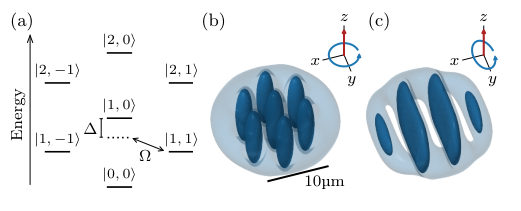
<figcaption class="paper-figure-caption"><b>Fig 1.</b> FIG. 1. Supersolids of shielded polar molecules. (a) Energy level diagram of a molecule under an electric field and σ+- polarized microwave. The microwave has Rabi frequency Ω, detuning ∆and couples the |1, 0⟩state to the |1, 1⟩state. For imperfect polarization, the |1, −1⟩state is coupled as well. (b) Ground state of a gas of 3 × 104 CaF molecules under an electric field of 22.5 kV/cm and microwave with Ω= 60 MHz and ∆= 1.925Ωin a pancake trap. The insets show the static electric field F (red) and the perpendicular, rotating microwave field E (blue). (c) Same as (b), but for an ellipti- cally polarized microwave with ξ = 1◦. The isosurfaces in (b) and (c) are shown for 5% and 16% of the...</figcaption>
</figure>
<figure class="paper-figure-card">
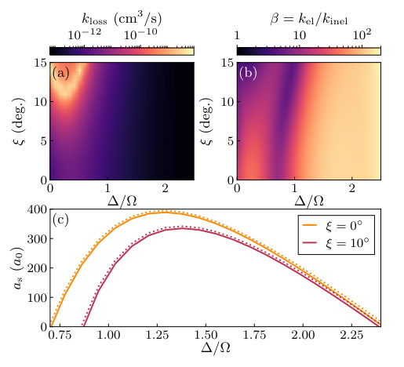
<figcaption class="paper-figure-caption"><b>Fig 2.</b> FIG. 2. Collisional properties of shielded CaF molecules. (a) Total loss rate coefficient kloss as a function of relative de- tuning (∆/Ω) and ellipticity (ξ) at a fixed electric field of 22.5 kV/cm and Ω= 60 MHz, at the energy 10 nK×kB. (b) Elastic to inelastic collision ratio β. (c) Real part of the s-wave scattering length from coupled-channel calcula- tions (solid lines) and from single-channel calculations (dotted lines).</figcaption>
</figure>
<figure class="paper-figure-card">
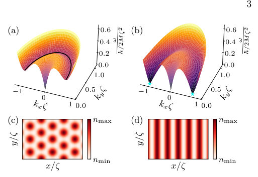
<figcaption class="paper-figure-caption"><b>Fig 3.</b> FIG. 3. Excitation spectrum of a molecular condensate in planar geometry. We fix the dipolar parameter at ε(1) dd = 1.75 and lz = 2.88 × ζ. (a) and (b) show the spectrum for ε(2) dd = 0 and ε(2) dd = 0.05, respectively. The solid line in (a) and the stars in (b) highlight the energy minima. Panels (c) and (d) schematically show the expected groundstate density upon roton softening for (a) and (b), respectively.</figcaption>
</figure>
<figure class="paper-figure-card">
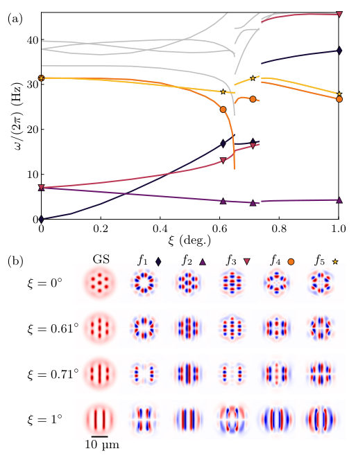
<figcaption class="paper-figure-caption"><b>Fig 4.</b> FIG. 4. Excitations of a confined planar molecular super- solid of 3 × 104 CaF molecules under an electric field F = 22.5 kV/cm and microwave of Rabi frequency Ω= 60 MHz and detuning ∆= 1.925Ω. (a) Excitation spectrum as a func- tion of the ellipticity ξ. Colored lines correspond to modes we show in panel (b). (b) Ground state density and low-lying ex- citation modes fi in the z = 0 plane for four representative values of ξ. The first column shows the ground state den- sity, other columns show the excitation modes the frequency of which is marked in panel (a).</figcaption>
</figure>
</div>

<p><strong>Summary.</strong> This theoretical study models polar molecules whose interactions are controlled by microwave fields and static electric fields. By deriving an effective interaction potential, the authors predict that the system can enter a supersolid stripe phase even with small microwave ellipticity. This work advances the understanding of quantum gas control and exotic phase realization in ultracold molecular systems.</p>
<p><strong>Why it may be interesting.</strong> This work directly addresses the control of quantum many-body systems using tailored light fields, providing a mechanism to realize exotic phases like supersolids in molecular BECs, which is highly relevant to modern AMO research.</p>
<details>
<summary>Detailed structure</summary>
<p><strong>Main problem.</strong> The study investigates microwave-controlled interactions and the resulting stripe phase formation in a system of polar molecules trapped in external fields.</p>
<p><strong>Main result.</strong> The research demonstrates that even small microwave ellipticity can induce a supersolid stripe phase in a quasi-two-dimensional molecular Bose-Einstein condensate.</p>
<p><strong>Method.</strong> The study employs perturbation theory to derive effective interaction potentials, which are then used in the extended Gross-Pitaevskii equation (GPE) and analyzed via Bogoliubov-de Gennes (BdG) equations.</p>
<p><strong>Model / system.</strong> The system consists of polar molecules subjected to a static electric field and an elliptically polarized microwave field. The interactions are modeled using derived effective potentials, leading to a mean-field description for the gas dynamics.</p>
<p><strong>Key observables.</strong> Collective excitation spectrum, ground state density, total loss rate coefficient, and the formation of the stripe phase.</p>
<p><strong>Important parameters / regimes.</strong> Static field strength (F), microwave ellipticity ($\xi$), detuning ($\Delta$), and Rabi frequency ($\Omega$).</p>
<p><strong>Assumptions / limitations.</strong> The effective interaction approach is validated against coupled-channel calculations, and the GPE approach assumes the applicability of mean-field theory.</p>
<p><strong>Figures summary.</strong> Figures illustrate the dependence of loss rates and scattering ratios on field parameters, and show the excitation spectrum of the condensate as a function of ellipticity, revealing the transition to a stripe phase.</p>
<p><strong>Paper structure.</strong> The paper proceeds by deriving the effective interaction potential via perturbation theory, analyzing the resulting loss mechanisms, and finally applying the effective interaction within the GPE framework to calculate and map out the excitation spectrum, revealing the stripe phase transition.</p>
</details>
<details>
<summary>Abstract</summary>
<p>We study polar molecules where short-range losses are suppressed by a shielding scheme involving a static electric field and an elliptically polarized microwave field. Using perturbation theory, we derive the effective interaction potential and validate it against coupled channel calculations. We identify a parameter regime where two-body losses are strongly suppressed and the extended mean-field description of dilute molecular Bose-Einstein condensates is justified. We calculate the collective excitations and show that intriguingly, supersolidity in quasi-two-dimensional confinement emerges as a stripe phase even at small values of microwave ellipticity.</p>
</details>
<p><sub><a href="#top">↑ back to top</a></sub></p>

<p><a id="paper-2609.10666"></a></p>
<h3 id="walking-floquet-code-circuits-for-zero-overhead-leakage-reduction"><a href="http://arxiv.org/abs/2609.10666v1">Walking Floquet code circuits for zero-overhead leakage reduction</a></h3>
<p><strong>Authors:</strong> Hanna Westerheim, Kaavya Sahay, Shruti Puri<br>
<strong>Type:</strong> theory · <strong>Category:</strong> quantum information and computing · <strong>PDF:</strong> <a href="https://arxiv.org/pdf/2609.10666v1">https://arxiv.org/pdf/2609.10666v1</a><br>
<strong>Analysis basis:</strong> full PDF text, analyzed in chunks
<strong>Topic relevance:</strong> <code>quantum measurements</code> <strong>3/5</strong> · <code>correlated / nonlocal dissipation</code> <strong>1/5</strong> · <code>driven-dissipative phase transition</code> <strong>1/5</strong> · <code>non-equilibrium universality</code> <strong>1/5</strong></p>
<div class="figure-strip-hint">↔ Scroll figures horizontally</div>
<div class="paper-figures-scroll">
<figure class="paper-figure-card">
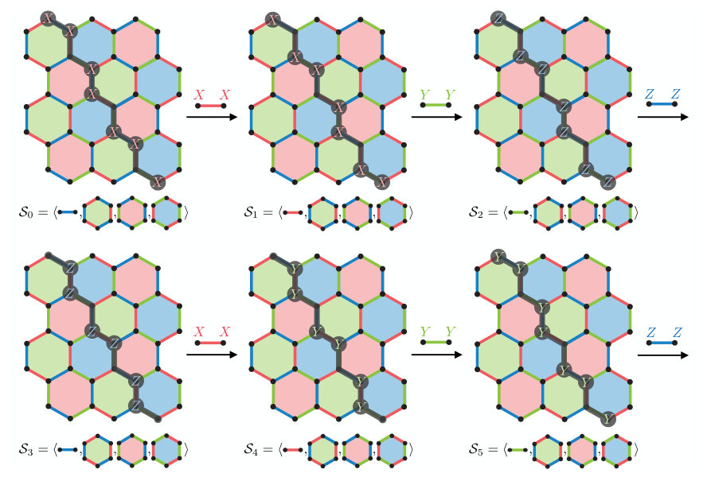
<figcaption class="paper-figure-caption"><b>Fig 1.</b> FIG. 1. The P6 honeycomb Floquet code (hFC) on the hexagonal lattice. Each panel represents the hFC at a particular point in time, where we show the evolution of a logical operator representative and the ISG. Check sets represented by the edges above the arrows are measured between time steps.</figcaption>
</figure>
<figure class="paper-figure-card">
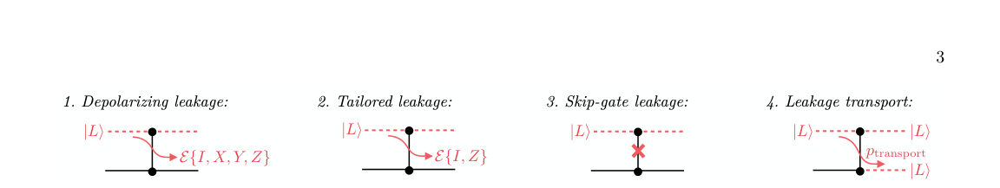
<figcaption class="paper-figure-caption"><b>Fig 2.</b> FIG. 2. The four leakage models considered in this work. The models differ in the effect of a leaked qubit on a sealed qubit upon interaction through a two-qubit Clifford CP gate, where P is a Pauli (CZ is shown as an example).</figcaption>
</figure>
<figure class="paper-figure-card">
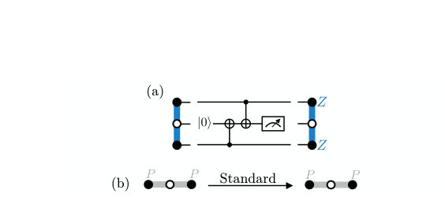
<figcaption class="paper-figure-caption"><b>Fig 3.</b> FIG. 3. Standard syndrome extraction circuit (SEC). (a) The ancilla qubit (middle wire) is reset, entangled with the two data qubits, and then measured. The measurement yields the eigenvalue of ZZ on the data qubits. (b) The standard SEC preserves data/ancilla qubit role assignments, unlike the late- and early-SWAP SECs shown in Figs. 5 and 6.</figcaption>
</figure>
<figure class="paper-figure-card">
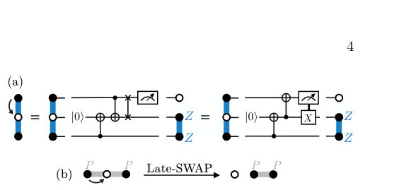
<figcaption class="paper-figure-caption"><b>Fig 4.</b> FIG. 5. Late-SWAP syndrome extraction circuit. (a) The central term is a schematic representation of the late- SWAP circuit, where just before measurement, a SWAP is applied between the ancilla qubit and one of the data qubits. The right-hand side employs Fig. 4(a) and (c), yielding the final, zero-overhead circuit. (b) The late-SWAP SEC ex- changes the roles of one of the data qubits and the ancilla, with the solid arrow indicating the direction of the data qubit information transfer.</figcaption>
</figure>
<figure class="paper-figure-card">
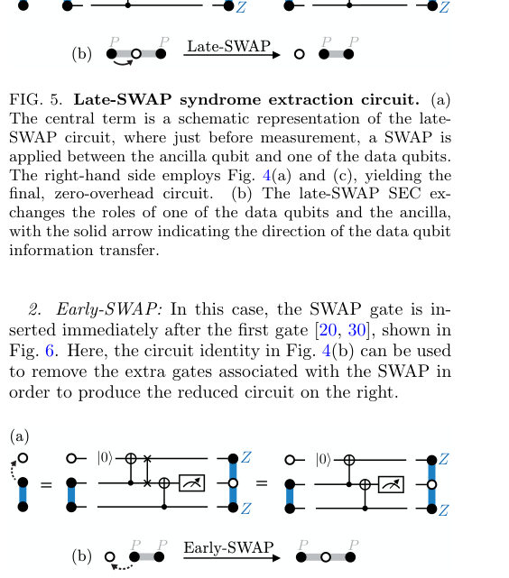
<figcaption class="paper-figure-caption"><b>Fig 5.</b> FIG. 6. Early-SWAP syndrome extraction circuit. (a) The central term is a schematic representation of the early- SWAP circuit implementation, where a SWAP is applied be- tween the ancilla qubit and one of the data qubits just after the first CX gate. The right-hand side employs Fig. 4(b), yielding the final, zero-overhead circuit. (b) The early-SWAP SEC transfers information from one data qubit to the freshly initialized ancilla, as indicated by the dashed arrow.</figcaption>
</figure>
</div>

<p><strong>Summary.</strong> This paper presents novel, zero-overhead walking circuits for the honeycomb Floquet code to combat leakage errors in quantum computation. By dynamically removing leakage while preserving code distance, the circuits show superior error correction capabilities compared to existing methods. The work highlights the importance of entropic effects, predicting a rapid 'waterfall' improvement in error rates at finite physical error levels.</p>
<p><strong>Why it may be interesting.</strong> The focus on leakage mitigation and the observation of non-standard error scaling regimes (waterfall) provide advanced insights into the practical limits of fault-tolerant quantum computation beyond simple asymptotic bounds.</p>
<details>
<summary>Detailed structure</summary>
<p><strong>Main problem.</strong> The paper addresses the significant challenge of leakage errors in quantum error correction (QEC), which induce correlated errors and degrade code performance.</p>
<p><strong>Main result.</strong> The proposed zero-overhead walking circuits for the honeycomb Floquet code can correct as many leakage errors as Pauli errors, and exhibit a pronounced 'waterfall regime' where performance surpasses distance-limited scaling predictions.</p>
<p><strong>Method.</strong> The authors introduce and analyze two specific walking circuits (swirling and sliding) designed to periodically remove leakage while dynamically protecting logical qubits using anticommuting two-body measurements.</p>
<p><strong>Model / system.</strong> The study focuses on the honeycomb Floquet code (hFC) implemented on a hexagonal lattice, analyzed under several physically motivated leakage noise models (e.g., depolarizing, skip-gate leakage).</p>
<p><strong>Key observables.</strong> Logical Error Rate ($p_L$), Code Distance, Qubit Lifetime, and the scaling exponent ($\alpha$) of the error rate.</p>
<p><strong>Important parameters / regimes.</strong> Physical error rate ($p$), leakage noise strength, and the comparison between asymptotic low-error regimes and finite-error 'waterfall' regimes.</p>
<p><strong>Assumptions / limitations.</strong> The circuits are designed to be 'zero-overhead,' meaning they do not require additional qubits, gates, or time steps for leakage removal.</p>
<p><strong>Figures summary.</strong> Figures illustrate the hFC on the lattice, the four leakage noise models considered, and plots showing the dependence of the logical error rate on the physical error rate, highlighting the waterfall regime.</p>
<p><strong>Paper structure.</strong> The paper introduces the hFC and the leakage problem, details the construction of the zero-overhead circuits (swirling/sliding), analyzes performance under various leakage models via numerical simulation, and compares results against the walking surface code.</p>
</details>
<details>
<summary>Abstract</summary>
<p>Leakage, occurring when a qubit undetectably exits the computational subspace, poses a significant challenge for quantum error correction by inducing correlated errors in space and time. These correlations reduce both the code threshold and the effective code distance. To address this challenge, we introduce two zero-overhead walking circuits for the honeycomb Floquet code (hFC), termed the swirling and sliding circuits, which periodically remove leakage while dynamically protecting logical qubits via a schedule of anticommuting two-body measurements. Unlike previous dynamic circuits for the hFC, ours preserves the distance to Pauli errors. We further study their performance under leakage and find that, for two leakage noise models, they may correct as many leakage errors as Pauli errors, improving on the more widely known walking surface code. Through numerical simulation, we observe that finite-error-rate performance under leakage is strongly influenced by entropic effects, producing a pronounced waterfall regime in which the logical error rate decreases much more rapidly with physical error rate than the expected distance-limited scaling. In this regime, even when asymptotic predictions suggest otherwise, the hFC can outperform the same-distance walking surface code in error rates and sub-threshold logical error scaling.</p>
</details>
<p><sub><a href="#top">↑ back to top</a></sub></p>

<p><a id="paper-2609.11811"></a></p>
<h3 id="block-entropy-area-based-non-local-fermionic-mode-optimization-with-gradient-disentanglers"><a href="http://arxiv.org/abs/2609.11811v1">Block entropy area based non-local fermionic mode optimization with gradient disentanglers</a></h3>
<p><strong>Authors:</strong> Miklós Antal Werner, Gero Friesecke, Andor Menczer, Kornél Kapás, Örs Legeza<br>
<strong>Type:</strong> theory · <strong>Category:</strong> numerical methods · <strong>PDF:</strong> <a href="https://arxiv.org/pdf/2609.11811v1">https://arxiv.org/pdf/2609.11811v1</a><br>
<strong>Analysis basis:</strong> full PDF text, analyzed in chunks
<strong>Topic relevance:</strong> <code>analog quantum simulation</code> <strong>3/5</strong> · <code>methods for driven-dissipative</code> <strong>2/5</strong></p>
<div class="figure-strip-hint">↔ Scroll figures horizontally</div>
<div class="paper-figures-scroll">
<figure class="paper-figure-card">
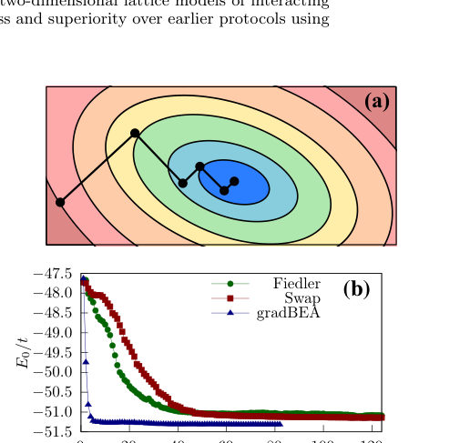
<figcaption class="paper-figure-caption"><b>Fig 1.</b> FIG. 1. ( a) Illustration of the steepest descent algorithm. After setting the search direction to the gradient of the cost function (shown as a contour plot) at a parameter point, the point is updated by minimizing the cost function along the straight search line. (b) Ground state energy of the 10 × 10 sized spinless tt’V model at t′/t = 0.4 and V/t = 0.8 as a function of mode optimization iterations at bond dimension D = 80. The method introduced in our work (blue trian- gles) shows an order of magnitude faster convergence com- pared to the local methods using Fiedler vector- [23] or sys- tematic swap-gate-based [24] reorderings. The best (lowest) ground state energy in our work E0/t =...</figcaption>
</figure>
<figure class="paper-figure-card">
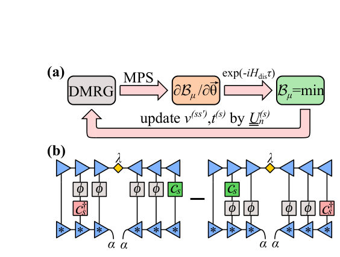
<figcaption class="paper-figure-caption"><b>Fig 2.</b> FIG. 2. (a) Iteration loop of the gradient-based mode opti- mization algorithm. From the MPS wavefunction produced by DMRG, we determine the gradient of Bµ, and construct the disentangler Hamiltonian ˆHdis. Time evolution with this decreases Bµ, and is minimized at some time τ ∗, is used to construct U (s) n in Eq. (12). (b) Tensor diagram of Ξ(s,kl) αα used in Eq. (9) for {k = 2, l = 6}. The yellow diamond is the diagonal matrix containing the Schmidt values λα, the blue triangles are in the left and right are left- and right-canonical MPS matrices [11], and squares stand for single-site opera- tors, where ϕ = (−1)n↑+n↓is the Jordan-Wigner sign.</figcaption>
</figure>
<figure class="paper-figure-card">
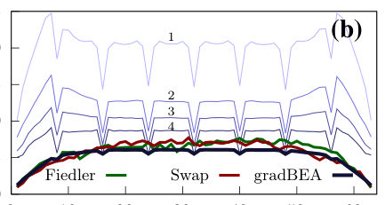
<figcaption class="paper-figure-caption"><b>Fig 3.</b> FIG. 3. ( a) Ground state energy of the 8 × 8 sized Hubbard model for U/t = 4 as a function of mode optimization itera- tions at bond dimension D = 128. Blue triangles show results using the method of this work, red squares and green circles show results using the methods of Refs. 23 and 24. For the latter two datasets the slower initial convergence is discarded by shifting the iteration number by 100 to the left. The best (lowest) ground state energy in our work E0/t = −54.183 is significantly below the best swap-gate and Fiedler-vector- based results (Eswap 0 /t = −53.995, EFiedler 0 /t = −53.882).</figcaption>
</figure>
</div>

<p><strong>Summary.</strong> This paper presents a novel, gradient-based algorithm (gradBEA) to optimize the single-particle basis used in Matrix Product States for fermionic systems. By minimizing a block entropy area cost function, the method iteratively refines the state representation, achieving superior convergence and accuracy compared to previous local optimization techniques. It provides a powerful, generalizable tool for simulating complex quantum many-body physics.</p>
<p><strong>Why it may be interesting.</strong> The development of a non-local, gradient-based optimization technique for tensor network representations is a powerful algorithmic advance for simulating strongly correlated quantum systems, potentially improving upon standard DMRG limitations.</p>
<details>
<summary>Detailed structure</summary>
<p><strong>Main problem.</strong> The core problem is efficiently finding the ground state eigenstates of many-body Hamiltonians for interacting fermions, which is computationally intractable due to the exponential growth of the Hilbert space.</p>
<p><strong>Main result.</strong> The proposed gradient-based method (gradBEA) achieves significantly faster convergence and yields lower ground state energies compared to established local optimization protocols.</p>
<p><strong>Method.</strong> It introduces a systematic block entropy area based mode optimization algorithm that uses the gradient of an entanglement cost function to drive an iterative, non-local update of the single-particle basis within the Matrix Product State framework.</p>
<p><strong>Model / system.</strong> The method is applied to interacting fermions, modeled using Matrix Product States (MPS). Specific examples include spinless 'tt'V' models on a square lattice, the Hubbard model, and the $    ext{Fe}_4   ext{S}_4$ cluster.</p>
<p><strong>Key observables.</strong> The primary observables are the ground state energy ($E_0/t$) and the entanglement measure, the block entropy area ($B_\mu$).</p>
<p><strong>Important parameters / regimes.</strong> The optimization depends on the entanglement measure ($\mu$-Rényi entropy $S^{(i)}_\mu$) and the parameters ($\vec{	heta}$) governing the unitary rotations ($U^{(s)}$).</p>
<p><strong>Assumptions / limitations.</strong> The optimization is performed iteratively by following the steepest descent path defined by the gradient, and the method is restricted to optimizing rotations within the spanned single-particle space.</p>
<p><strong>Figures summary.</strong> Figure 1 compares the ground state energy convergence of gradBEA against local methods for the $   ext{tt}'    ext{V}$ model. Figure 2 illustrates the iterative loop and the tensor diagram used in the calculation.</p>
<p><strong>Paper structure.</strong> The paper details the systematic derivation of the gradient of the block entropy area, outlines the three-step iterative optimization protocol (DMRG simulation, gradient calculation, time evolution via PS-TDVP), and validates the method on various lattice and molecular models.</p>
</details>
<details>
<summary>Abstract</summary>
<p>We introduce a systematic block entropy area based mode optimization algorithm for many-body quantum states of interacting fermions represented by matrix product states. From the gradient of a global cost function, the block entropy area, a long-ranged, non-interacting effective disentangler Hamiltonian is formed. We then simulate the time-dependent Schrödinger equation driven by the disentangler Hamiltonian by employing the time-dependent variational principle based on projector splitting, and minimize the cost function. The combination of the density matrix renormalization group with this gradient-based entanglement minimization forms an efficient low-rank iterative ground-state algorithm that also provides an optimized single-particle basis for matrix product state representation. We demonstrate the method on two-dimensional lattice models of interacting fermions and the Fe${_4}$S${_4}$ cluster, and show its robustness and superiority over earlier protocols using nearest-neighbor mode rotations and reorderings.</p>
</details>
<p><sub><a href="#top">↑ back to top</a></sub></p>

<p><a id="paper-2609.11779"></a></p>
<h3 id="condensation-temperature-and-magnetic-phases-of-trapped-coherently-coupled-bose-gases"><a href="http://arxiv.org/abs/2609.11779v1">Condensation temperature and magnetic phases of trapped coherently coupled Bose gases</a></h3>
<p><strong>Authors:</strong> Sunilkumar V, Rajat, Sandeep Gautam, Arko Roy<br>
<strong>Type:</strong> theory · <strong>Category:</strong> quantum gases · <strong>PDF:</strong> <a href="https://arxiv.org/pdf/2609.11779v1">https://arxiv.org/pdf/2609.11779v1</a><br>
<strong>Analysis basis:</strong> full PDF text, analyzed in chunks
<strong>Topic relevance:</strong> <code>analog quantum simulation</code> <strong>3/5</strong> · <code>Keldysh / 2PI / non-Gaussian methods</code> <strong>2/5</strong></p>
<div class="figure-strip-hint">↔ Scroll figures horizontally</div>
<div class="paper-figures-scroll">
<figure class="paper-figure-card">
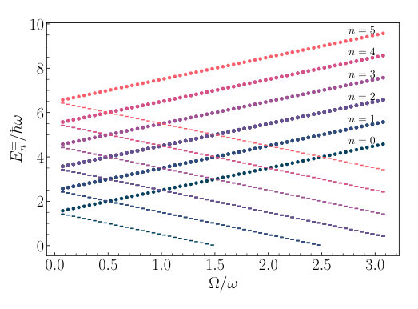
<figcaption class="paper-figure-caption"><b>Fig 1.</b> FIG. 1. Excitation spectrum E± n of an isotropic three- dimensional harmonically trapped, non-interacting coherently coupled BEC as a function of the coherent coupling strength. The dots represent the upper branch E+ n , while the dashed lines denote the lower branch E− n .</figcaption>
</figure>
<figure class="paper-figure-card">
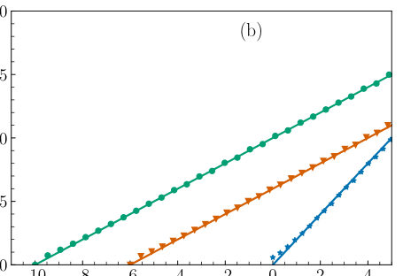
<figcaption class="paper-figure-caption"><b>Fig 2.</b> FIG. 2. Density of states (DOS) as a function of excitation energy for different coherent coupling strengths. (a) Three- dimensional DOS, ρ3D, showing the expected quadratic de- pendence on energy. The solid lines correspond to the ana- lytical semiclassical results, while the markers are obtained by directly evaluating Eq. (3) using the Lorentzian approxi- mation to the Dirac delta function for an isotropic harmonic trap. (b) Two-dimensional DOS, ρ2D, exhibiting the char- acteristic linear dependence on energy for different coherent coupling strengths.</figcaption>
</figure>
<figure class="paper-figure-card">
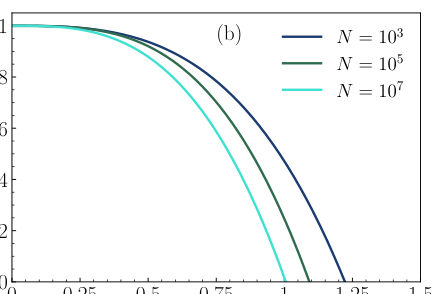
<figcaption class="paper-figure-caption"><b>Fig 3.</b> FIG. 3. Variation of the critical temperature and condensate fraction of a three-dimensional ideal coherently coupled BEC. (a) Normalized critical temperature, Tc(Ω)/Tc(0), as a func- tion of coherent coupling strength for different atom numbers. The enhancement of Tc becomes less pronounced with increas- ing N. (b) Condensate fraction, N0/N, as a function of the scaled temperature, T/Tc(0), for different atom numbers at Ω/ω = 10. For each atom number N, the temperature is nor- malized separately by its corresponding zero-coupling critical temperature.</figcaption>
</figure>
<figure class="paper-figure-card">
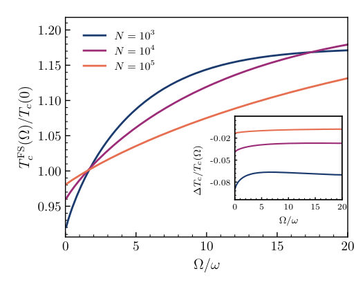
<figcaption class="paper-figure-caption"><b>Fig 4.</b> FIG. 4. Finite-size correction to the critical temperature in 3D as a function of coherent coupling strength for different atom numbers. For each N, the temperature is normalized by its corresponding zero-coupling critical temperature. The inset shows the relative finite-size correction, ∆Tc/Tc(Ω) = [T FS c (Ω)−Tc(Ω)]/Tc(Ω), as a function of the coherent coupling strength.</figcaption>
</figure>
<figure class="paper-figure-card">
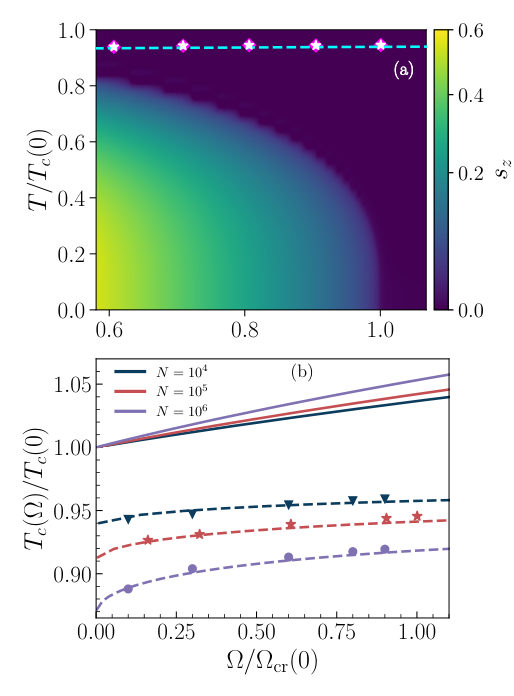
<figcaption class="paper-figure-caption"><b>Fig 5.</b> FIG. 5. (a) Phase diagram of a coherently coupled BEC at finite temperature in the T −Ωplane, color coded by the magnetization sz for N = 105. The vanishing of sz identi- fies the finite-temperature ferro–paramagnetic phase bound- ary. The paramagnet–thermal gas transition is indicated by the dashed line, obtained analytically from Eq. (50), with the corresponding critical temperatures compared with the numerical results (markers). This boundary also marks the vanishing of the transverse magnetization sx. White mark- ers denote the HFB-Popov results for the critical tempera- ture obtained from the vanishing condensate fraction, while magenta markers indicate the corresponding temperatures...</figcaption>
</figure>
</div>

<p><strong>Summary.</strong> This theoretical study analyzes the phase transitions and critical temperature of a Bose gas coupled coherently in a harmonic trap. By using semiclassical and HFB-Popov methods, the authors show that coherent coupling modifies $T_c$, and that repulsive interactions stabilize the system's response to this coupling. The results provide a detailed phase diagram mapping the transition from magnetic to thermal states.</p>
<p><strong>Why it may be interesting.</strong> This work directly addresses the interplay between coherent quantum coupling, spatial confinement, and interatomic interactions on fundamental quantum phase transitions in ultracold atomic systems.</p>
<details>
<summary>Detailed structure</summary>
<p><strong>Main problem.</strong> The paper investigates the condensation temperature and magnetic phase transitions in a Bose gas subjected to coherent coupling (Rabi coupling) within a harmonic trap.</p>
<p><strong>Main result.</strong> Coherent coupling enhances the critical temperature, and repulsive interactions substantially suppress the variation of this temperature with increasing coupling strength.</p>
<p><strong>Method.</strong> The study employs the semiclassical description for the noninteracting case and the Hartree–Fock–Bogoliubov–Popov (HFB-Popov) framework for interactions.</p>
<p><strong>Model / system.</strong> The system is a Bose gas confined in a 3D harmonic trap, modeled with a Hamiltonian incorporating a coherent coupling term ($\sigma_x$). The analysis covers both noninteracting and interacting regimes.</p>
<p><strong>Key observables.</strong> Critical temperature ($T_c$), condensate fraction ($N_0/N$), and the magnetic phase diagram (Ferromagnetic $ o$ Paramagnetic $   o$ Thermal gas).</p>
<p><strong>Important parameters / regimes.</strong> Coherent coupling strength ($\Omega$), particle number ($N$), and interaction strength ($g$).</p>
<p><strong>Assumptions / limitations.</strong> The semiclassical approximation ($k_B T \gg \hbar\omega$) is used for the density of states, and the analysis incorporates finite-size corrections.</p>
<p><strong>Figures summary.</strong> Figures illustrate the excitation spectrum showing level splitting, the density of states ($
ho_{3D}, 
ho_{2D}$) for varying coupling, and the normalized $T_c$ and condensate fraction versus temperature.</p>
<p><strong>Paper structure.</strong> The paper progresses from noninteracting analysis using semiclassical methods to incorporating finite-size corrections. It then extends the analysis to include repulsive interactions using the HFB-Popov framework to map the full phase diagram.</p>
</details>
<details>
<summary>Abstract</summary>
<p>We investigate condensation and finite-temperature magnetic phase transitions in a coherently (Rabi) coupled Bose gas confined in a three-dimensional harmonic trap. For the noninteracting system, we derive analytical expressions for the critical temperature and condensate fraction using a semiclassical description of the single-particle spectrum and density of states. At fixed particle number, coherent coupling enhances the critical temperature relative to the uncoupled system, and this enhancement decreases with increasing particle number $N$. The finite-size correction, in contrast, lowers the transition temperature, with its effect diminishing for larger $N$. We then incorporate repulsive interactions within the Hartree--Fock--Bogoliubov--Popov framework to investigate the finite-temperature phase diagram in the temperature--Rabi coupling plane. The system undergoes successive transitions from a ferromagnetic to a paramagnetic condensate and, at higher temperature, to a thermal gas. The transition boundaries obtained from the vanishing of the condensate fraction show excellent agreement with the analytical Hartree-Fock predictions. We find that the interactions substantially suppress the variation in the condensation temperature with an increase in the coherent coupling.</p>
</details>
<p><sub><a href="#top">↑ back to top</a></sub></p>

<p><a id="paper-2609.11359"></a></p>
<h3 id="engineering-quantum-links-noise-and-quantum-state-degradation-metrics-over-metropolitan-fiber-network"><a href="http://arxiv.org/abs/2609.11359v1">Engineering Quantum Links: Noise and Quantum-State-Degradation Metrics over Metropolitan Fiber Network</a></h3>
<p><strong>Authors:</strong> Marcello Caleffi, Laura d'Avossa, Angela Sara Cacciapuoti<br>
<strong>Type:</strong> both · <strong>Category:</strong> quantum information and computing · <strong>PDF:</strong> <a href="https://arxiv.org/pdf/2609.11359v1">https://arxiv.org/pdf/2609.11359v1</a><br>
<strong>Analysis basis:</strong> full PDF text, analyzed in chunks
<strong>Topic relevance:</strong> <code>quantum optics experiment</code> <strong>3/5</strong> · <code>QC/QI experiment</code> <strong>1/5</strong> · <code>quantum measurements</code> <strong>1/5</strong></p>
<div class="figure-strip-hint">↔ Scroll figures horizontally</div>
<div class="paper-figures-scroll">
<figure class="paper-figure-card">
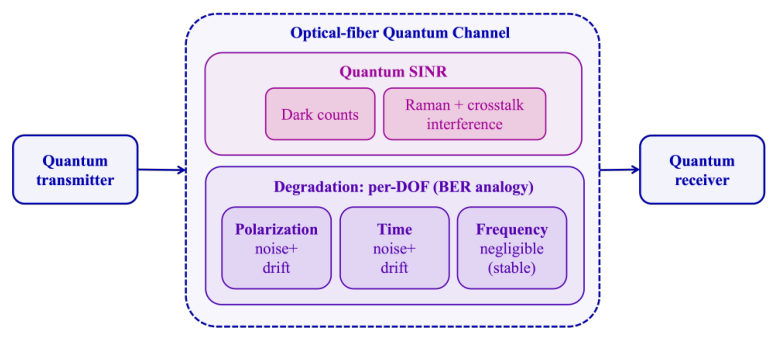
<figcaption class="paper-figure-caption"><b>Fig 1.</b> FIGURE 1. A quantum state propagating through an optical-fiber channel is degraded along a small set of measurable axes, in direct analogy with the impairments characterized in classical links. Two complementary descriptions capture this degradation. On the noise side, the photon-counting quantum-analog of the SINR accounts for the intrinsic noise and the interference introduced by co-propagating classical traffic via spontaneous Raman scattering and inter-fiber crosstalk. On the error side, the analog of the bit-error rate is resolved across the three main degrees-of-freedom available to encode a quantum state onto a single optical photon – namely, polarization, time, and frequency – and...</figcaption>
</figure>
<figure class="paper-figure-card">
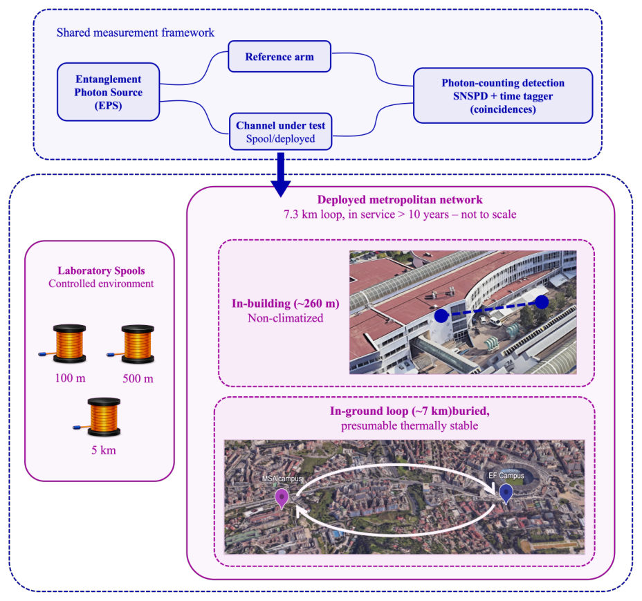
<figcaption class="paper-figure-caption"><b>Fig 2.</b> FIGURE 2. Experimental framework (not to scale). (Top): the Entangled-Photon Source (EPS) emits polarization-entangled, temporally correlated photon pairs; one member (the so-called idler) is sent to a local reference arm, while the other (the so-called signal) probes the link under test. Their temporal coincidences are recorded by superconducting-nanowire single-photon (SNSPD) detectors read out by a time tagger, and feed the two channel metrics. Using one photon of each pair as a heralding reference enables coincidence-based suppression of background counts, providing the rationale for employing an entangled source rather than a bright classical probe. (Bottom): the channel under test is...</figcaption>
</figure>
<figure class="paper-figure-card">
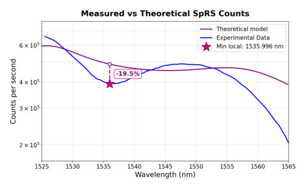
<figcaption class="paper-figure-caption"><b>Fig 3.</b> FIGURE 3. Measured C-band photon count rate generated by spontaneous Raman scattering from a classical signal co-propagating in the O-band at 1310 nm, over the deployed SMF-28 fiber (blue), compared with the Hollenbeck-Cantrell prediction for undoped silica (purple) [7]. The measured spectrum exhibits a characteristic local minimum near 1535 nm that the reference model does not reproduce, with the detected photon count departing from it by up to 19.5%. This minimum identifies the C-band operating point least affected by the co-propagating O-band traffic.</figcaption>
</figure>
<figure class="paper-figure-card">
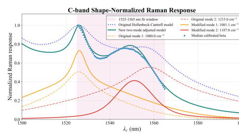
<figcaption class="paper-figure-caption"><b>Fig 4.</b> FIGURE 4. Normalized C-band Raman response: comparison between the experimental data measured across all laboratory sources and fiber lengths, the original Hollenbeck-Cantrell model for undoped silica [7], and the adjusted model obtained by modifying only the two highest-frequency Raman modes of the original model, namely modes 12 and 13. The individual contributions of modes 12 and 13 are also shown both in their original Hollenbeck-Cantrell form and as derived by the adjusted two-mode model, which follows the measured data closely, including the local minimum near 1535 nm that is not reproduced by the original Hollenbeck-Cantrell response. All the curves are normalized to their respective...</figcaption>
</figure>
<figure class="paper-figure-card">
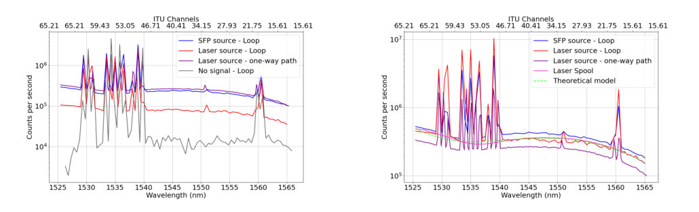
<figcaption class="paper-figure-caption"><b>Fig 5.</b> FIGURE 5. C-band SpRS photons generated by O-band classical sources as a function of wavelength, corresponding to the ITU DWDM channels. The measurements were obtained using both a narrowband laser source and a commercial Finisar SFP transmitter over both the complete loop (7 km) and a one-way path (3.5 km). (a) Raw data, including an additional reference measurement with no launched signal to identify background contributions. (b) Normalized data, including measurements obtained using an additional 5 km laboratory fiber spool. The results show consistency between the urban-scale and laboratory measurements after normalization.</figcaption>
</figure>
</div>

<p><strong>Summary.</strong> This paper develops an engineering framework for quantum networking by characterizing noise and state degradation over real metropolitan fiber links. The authors adapt classical communication metrics like SINR and BER to the quantum domain, measuring impairments across polarization, time, and frequency. This work transforms quantum networking from a theoretical exercise into a quantifiable engineering design problem for the Quantum Internet.</p>
<p><strong>Why it may be interesting.</strong> It provides concrete, measurable metrics (like the quantum link budget) that bridge fundamental quantum optics theory with practical, large-scale engineering deployment challenges in quantum communication.</p>
<details>
<summary>Detailed structure</summary>
<p><strong>Main problem.</strong> To establish an engineering foundation for deploying quantum networks over existing metropolitan fiber infrastructure by quantitatively characterizing channel noise and quantum state degradation.</p>
<p><strong>Main result.</strong> The quantum link can be characterized by a small set of measurable parameters, transforming quantum networking from a pure physics demonstration into a solvable engineering design problem.</p>
<p><strong>Method.</strong> The authors developed a unified framework by creating quantum analogs of classical metrics (SINR and BER) and applying them to real-world measurements on a deployed fiber loop.</p>
<p><strong>Model / system.</strong> The study uses a 7.3 km metropolitan fiber loop in the QuantumInternet.it testbed, comparing quantum signals (C-band) to classical traffic (O-band). The analysis models noise using a photon-counting SINR analog and state degradation across polarization, time, and frequency using BER analogs.</p>
<p><strong>Key observables.</strong> Dark-count rate, interference count from classical traffic, channel-induced degradation, and temporal drift for polarization, time, and frequency.</p>
<p><strong>Important parameters / regimes.</strong> The link budget is built from measurable parameters, including the ratio of signal to noise/interference counts, and the spectral characteristics of Raman noise.</p>
<p><strong>Assumptions / limitations.</strong> The approach assumes the use of a shared physical medium, allocating classical traffic to the O-band and quantum signals to the C-band.</p>
<p><strong>Figures summary.</strong> Figure 1 illustrates that quantum state degradation is captured by two complementary descriptions: the SINR analog (noise side) and the BER analog (error side, resolved across polarization, time, and frequency).</p>
<p><strong>Paper structure.</strong> The paper builds the foundation by first defining the necessary metrics (SINR/BER analogs), then experimentally measuring noise (dark counts, crosstalk) and state degradation (polarization, time, frequency drift) on a deployed loop, culminating in a comprehensive quantum link budget.</p>
</details>
<details>
<summary>Abstract</summary>
<p>Deploying quantum networks over existing network infrastructures requires the same engineering foundations that underpin classical communications: quantitative models of the channel's noise and of the impairments it imposes on the transmitted information. In this work, we build such a foundation on experimental measurements, grounding the quantum-network counterparts of the two cornerstone metrics of classical link characterization - namely, the SINR and the BER - on a 7.3 km deployed metropolitan-scale fiber-loop interconnecting two campuses of the University of Naples Federico II within the national QuantumInternet.it testbed. On the noise side, we adopt a photon-counting quantum analog of the SINR - in which dark counts constitute the intrinsic noise and the photons generated by classical traffic (through either spontaneous Raman scattering or inter-fiber crosstalk) constitute the interference - and we quantify each contribution directly on the deployed loop. On the bit-error side, we consider the main degrees-of-freedom available to encode a quantum state within an optical photon - namely, polarization, time, and frequency - and we quantify for each degree the channel-induced degradation and its drift over time. These results show that a quantum fiber link, like its classical counterpart, can be captured by a small set of measurable parameters, turning quantum networking over deployed fiber from a physics demonstration into an engineering design problem. Together, they provide the key ingredients of a quantum link budget for the Quantum Internet.</p>
</details>
<p><sub><a href="#top">↑ back to top</a></sub></p>

<p><a id="paper-2609.10667"></a></p>
<h3 id="entanglement-entropy-in-topological-tensor-networks"><a href="http://arxiv.org/abs/2609.10667v1">Entanglement entropy in topological tensor networks</a></h3>
<p><strong>Authors:</strong> Vijay Balasubramanian, Charlie Cummings<br>
<strong>Type:</strong> theory · <strong>Category:</strong> numerical methods · <strong>PDF:</strong> <a href="https://arxiv.org/pdf/2609.10667v1">https://arxiv.org/pdf/2609.10667v1</a><br>
<strong>Analysis basis:</strong> full PDF text, analyzed in chunks
<strong>Topic relevance:</strong> <code>methods for driven-dissipative</code> <strong>3/5</strong> · <code>analog quantum simulation</code> <strong>2/5</strong></p>
<div class="figure-strip-hint">↔ Scroll figures horizontally</div>
<div class="paper-figures-scroll">
<figure class="paper-figure-card">
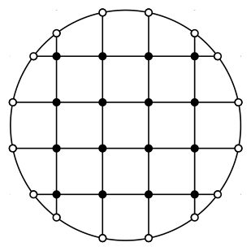
<figcaption class="paper-figure-caption"><b>Fig 1.</b> Figure 1. A lattice Λ tessellating the disk Σ. The bulk vertices are in black, and the boundary vertices are in white. For a topological tensor network, we should take all the edges to be oriented.</figcaption>
</figure>
<figure class="paper-figure-card">
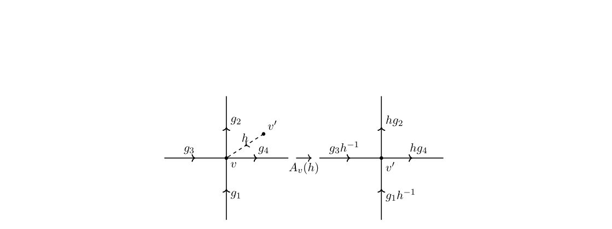
<figcaption class="paper-figure-caption"><b>Fig 2.</b> Figure 2. The action of Av(h) on a state |g1, g2, g3, g4⟩. Av(h) acts trivially on any edge which does not end at the vertex v.</figcaption>
</figure>
<figure class="paper-figure-card">
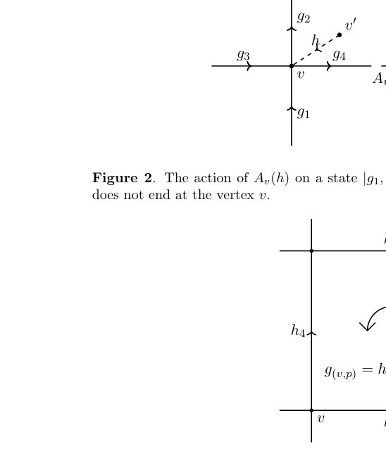
<figcaption class="paper-figure-caption"><b>Fig 3.</b> Figure 3. An example of a plaquette that B(v,p)(h) acts on.</figcaption>
</figure>
<figure class="paper-figure-card">

<figcaption class="paper-figure-caption"><b>Fig 4.</b> Figure 4. An example of move 1, which can be performed to add or remove a bulk vertex/leg from the graph Λ. In other words, we can split or combine bulk vertices.</figcaption>
</figure>
<figure class="paper-figure-card">
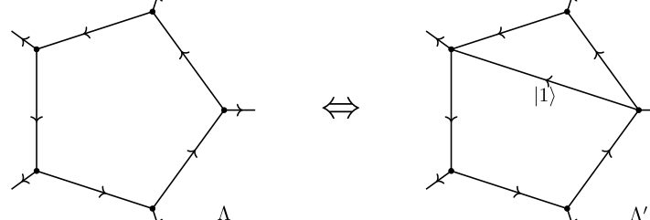
<figcaption class="paper-figure-caption"><b>Fig 5.</b> Figure 5. An example of move 2, which can add or remove a leg/plaquette from the graph Λ. In other words, we can split or fuse two bulk plaquettes together.</figcaption>
</figure>
</div>

<p><strong>Summary.</strong> This paper develops a generalized entropy formula for tensor network models representing TQFTs with continuous gauge groups. By imposing specific constraints on the network structure, the authors derive an entropy that incorporates infinite excitations, successfully connecting the model to 3D gravity theories. This work advances the use of tensor networks to probe fundamental concepts in quantum gravity and topological order.</p>
<p><strong>Why it may be interesting.</strong> The use of tensor networks to model fundamental concepts like topological entanglement entropy and gravity provides a concrete, computable framework for understanding quantum gravity phenomena, which is relevant to understanding complex many-body ground states.</p>
<details>
<summary>Detailed structure</summary>
<p><strong>Main problem.</strong> Deriving a generalized entropy formula for tensor network models that describe diffeomorphism invariant states of Topological Quantum Field Theories (TQFTs) with continuous gauge groups.</p>
<p><strong>Main result.</strong> The derived entropy formula successfully generalizes topological entanglement entropy to incorporate infinite excitations from continuous gauge groups, providing an analogue to holographic entropy in 3D gravity.</p>
<p><strong>Method.</strong> The authors use advanced algebraic techniques, including defining a factorization map and imposing electric/magnetic constraints on the tensor network structure, to calculate the entropy.</p>
<p><strong>Model / system.</strong> The model is a topological tensor network defined on a surface $\Sigma$, which is used as a toy model for the holographic map in quantum gravity. It is designed to prepare states corresponding to TQFTs with gauge groups like $\text{SL}(2, \mathbb{R})$.</p>
<p><strong>Key observables.</strong> The entropy $S(\rho_R) = H[p_\pi] + \langle\hat{A}\rangle_\rho + S_{\text{bulk}}(\rho_R)$, where $\langle\hat{A}\rangle_\rho$ is the universal term analogous to the area term.</p>
<p><strong>Important parameters / regimes.</strong> The gauge group (e.g., $\text{SL}(2, \mathbb{R})$), the genus and boundary components of the surface $\Sigma$, and the small Newton's constant $G_N$.</p>
<p><strong>Assumptions / limitations.</strong> The analysis assumes the existence of a factorization map $V$ to handle gauge constraints and relies on the equivalence between the factorization map approach and the algebraic approach.</p>
<p><strong>Figures summary.</strong> Figure 1 illustrates a lattice tessellating the disk, distinguishing between bulk and boundary vertices, which is central to defining the entropy calculation.</p>
<p><strong>Paper structure.</strong> The paper develops the entropy formula by first defining the physical Hilbert space using constraints (electric and magnetic) on the tensor network structure, leading to the final generalized entropy expression.</p>
</details>
<details>
<summary>Abstract</summary>
<p>We derive an entropy formula for recently proposed tensor network models which prepare diffeomorphism invariant states of topological quantum field theories with non-compact and/or continuous gauge groups. We show that our entropy formula generalizes the notion of ``topological entanglement entropy'' to incorporate the infinite number of particle-like excitations in such theories. When our networks are endowed with gauge group $\mathrm{SL}(2,\mathbb{R})$, we can interpret them as models of three-dimensional gravity with small Newton's constant and possibly non-invertible metrics.</p>
</details>
<p><sub><a href="#top">↑ back to top</a></sub></p>

<p><a id="paper-2609.10755"></a></p>
<h3 id="massive-quantum-divergence-on-the-cauchy-horizon-of-a-black-hole"><a href="http://arxiv.org/abs/2609.10755v1">Massive quantum divergence on the Cauchy horizon of a black hole</a></h3>
<p><strong>Authors:</strong> Marc Casals, Lorenzo Pisani, Peter Taylor<br>
<strong>Type:</strong> theory · <strong>Category:</strong> other · <strong>PDF:</strong> <a href="https://arxiv.org/pdf/2609.10755v1">https://arxiv.org/pdf/2609.10755v1</a><br>
<strong>Analysis basis:</strong> full PDF text, analyzed in chunks
<strong>Topic relevance:</strong> <code>Keldysh / 2PI / non-Gaussian methods</code> <strong>3/5</strong> · <code>methods for driven-dissipative</code> <strong>1/5</strong> · <code>quantum measurements</code> <strong>1/5</strong></p>
<div class="figure-strip-hint">↔ Scroll figures horizontally</div>
<div class="paper-figures-scroll">
<figure class="paper-figure-card">
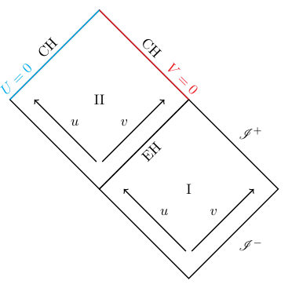
<figcaption class="paper-figure-caption"><b>Fig 1.</b> Figure 1: Penrose diagram of (part of) RN spacetime.</figcaption>
</figure>
<figure class="paper-figure-card">
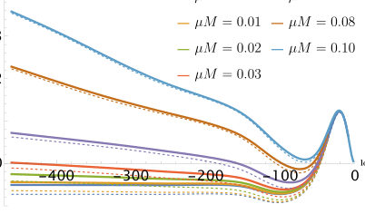
<figcaption class="paper-figure-caption"><b>Fig 2.</b> Figure 2: VP ⟨ˆΦ2⟩A ren in the H-H (solid lines) and Unruh (dashed lines) states for BH charge Q = 0.8M and ℓ= M near the CH for different values of the field mass µ.</figcaption>
</figure>
<figure class="paper-figure-card">
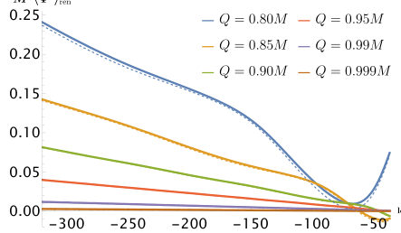
<figcaption class="paper-figure-caption"><b>Fig 3.</b> Figure 3: VP ⟨ˆΦ2⟩A ren in the H-H (solid lines) and Unruh (dashed lines) states for field mass µM = 0.1 and ℓ= M near the CH for different values of the BH charge Q.</figcaption>
</figure>
<figure class="paper-figure-card">
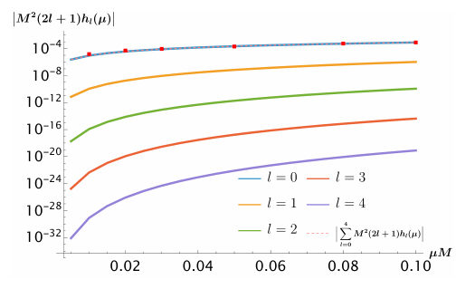
<figcaption class="paper-figure-caption"><b>Fig 4.</b> Figure 4: Log-plot of k(µ, Q) in (6) as well as its various l-mode contributions as per (7) as a function of the field mass µ with BH charge Q = 0.8M. The red squares represent k(µ, Q) obtained by fitting the numerical results for ⟨ˆΦ2⟩H ren.</figcaption>
</figure>
<figure class="paper-figure-card">
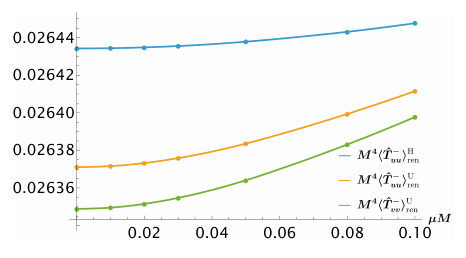
<figcaption class="paper-figure-caption"><b>Fig 5.</b> Figure 5: CH fluxes ⟨ˆT − uu⟩H ren = ⟨ˆT − vv⟩H ren, ⟨ˆT − uu⟩U ren and ⟨ˆT − vv⟩U ren as functions of the scalar field mass µ, for coupling ξ = 0 and BH charge Q = 0.8M.</figcaption>
</figure>
</div>

<p><strong>Summary.</strong> This paper analyzes quantum fluctuations of a massive scalar field inside a charged black hole, specifically focusing on the Cauchy horizon. The key finding is that quantum effects cause divergences in the stress-energy tensor on the CH, suggesting a stronger singularity than classical theory predicts. This work probes the limits of semi-classical gravity in extreme astrophysical environments.</p>
<p><strong>Why it may be interesting.</strong> While focused on general relativity, the study of divergences and backreaction in extreme spacetime geometries shares conceptual parallels with understanding instabilities or strong coupling regimes in quantum many-body systems.</p>
<details>
<summary>Detailed structure</summary>
<p><strong>Main problem.</strong> The study investigates the behavior of quantum massive scalar fields near the Cauchy horizon (CH) of a charged Reissner-Nordström black hole, focusing on quantum divergences and their implications for spacetime structure.</p>
<p><strong>Main result.</strong> The vacuum polarization and stress-energy tensor components diverge on the CH for massive fields, suggesting a strong singularity via backreaction, unlike the classical prediction.</p>
<p><strong>Method.</strong> The authors employ a semi-classical approach, calculating renormalized expectation values of quantum fields using techniques like the extended coordinate method in curved spacetime.</p>
<p><strong>Model / system.</strong> The system is a quantum massive scalar field propagating in the interior of a charged, spherically-symmetric Reissner-Nordström black hole spacetime.</p>
<p><strong>Key observables.</strong> Vacuum polarization ($\langle \hat{\Phi}^2 
angle$), components of the renormalized quantum stress-energy tensor ($\langle \hat{T}_{\mu
u} 
angle$), and energy fluxes in Eddington-Finkelstein and Kruskal coordinates.</p>
<p><strong>Important parameters / regimes.</strong> Black hole charge ($Q$), field mass ($\mu$), coupling constant ($\xi$), and the choice of quantum state (Hartle-Hawking vs. Unruh).</p>
<p><strong>Assumptions / limitations.</strong> The analysis is restricted to the RN background and relies on the semi-classical approximation where quantum effects source classical spacetime curvature.</p>
<p><strong>Figures summary.</strong> Figures illustrate the divergence of vacuum polarization and stress-energy tensor components near the CH for varying field masses and charges, and show the dependence of fluxes on parameters.</p>
<p><strong>Paper structure.</strong> The paper analyzes the quantum field behavior by comparing massive and massless cases, calculating divergences in the vacuum polarization and stress-energy tensor components, and discussing the implications for the stability and singularity structure of the Cauchy horizon.</p>
</details>
<details>
<summary>Abstract</summary>
<p>We investigate a quantum massive scalar field in the interior of a charged and spherically-symmetric (Reissner-Nordström) black hole. We examine the behaviour for varying values of the black hole charge, field mass and coupling constant when the field is in two quantum states: Hartle-Hawking (representing a black hole in thermal equilibrium) and Unruh (representing a black hole evaporating via the emission of Hawking radiation). We show that the vacuum polarization as well as the angular components of the quantum stress-energy tensor diverge on the Cauchy horizon, in stark contrast to what happens for massless fields. We also calculate the energy fluxes in Eddington-Finkelstein coordinates $\{u,v\}$. We show that these fluxes on the Cauchy horizon do not generically vanish. This implies, in particular, that in regular, Kruskal coordinates $\{U,V\}$ the ingoing flux diverges like $V^{-2}$ on the Cauchy horizon (where $V=0$). This divergence suggests that its backreaction via the semiclassical Einstein equations would yield a strong singularity, as opposed to its weaker, classical counterpart. Interestingly, there are exceptions, in which the energy fluxes in Eddington-Finkelstein coordinates vanish: (i) in the extremal limit (where the black hole is maximally charged); (ii) certain fine-tuned regions of parameter space, where the fluxes change sign.</p>
</details>
<p><sub><a href="#top">↑ back to top</a></sub></p>

<p><a id="paper-2609.11047"></a></p>
<h3 id="transdimensional-quantum-droplets-in-an-optically-trapped-bose-mixture"><a href="http://arxiv.org/abs/2609.11047v1">Transdimensional quantum droplets in an optically trapped Bose mixture</a></h3>
<p><strong>Authors:</strong> Xiaoran Ye, Yi Zhang, Ziheng Zhou, Zhaoxin Liang<br>
<strong>Type:</strong> theory · <strong>Category:</strong> quantum gases · <strong>PDF:</strong> <a href="https://arxiv.org/pdf/2609.11047v1">https://arxiv.org/pdf/2609.11047v1</a><br>
<strong>Analysis basis:</strong> full PDF text, analyzed in chunks
<strong>Topic relevance:</strong> <code>analog quantum simulation</code> <strong>3/5</strong> · <code>Keldysh / 2PI / non-Gaussian methods</code> <strong>2/5</strong></p>
<div class="figure-strip-hint">↔ Scroll figures horizontally</div>
<div class="paper-figures-scroll">
<figure class="paper-figure-card">
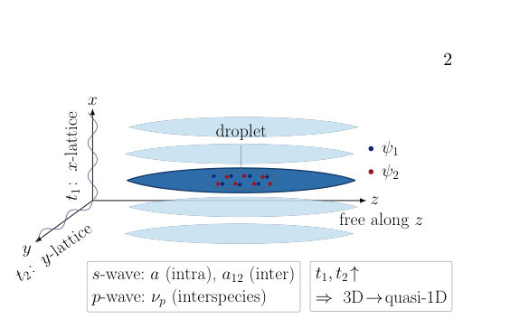
<figcaption class="paper-figure-caption"><b>Fig 1.</b> FIG. 1. Schematic illustration of transdimensional quan- tum droplets in a two-component Bose mixture confined by a two-dimensional transverse optical lattice, Vopt(x, y) = ER[t1 sin2(qBx) + t2 sin2(qBy)]. The lattice produces an ar- ray of quasi-one-dimensional tubes oriented along z, while the atoms remain free in the axial direction. Increasing the lat- tice depths t1 and t2 drives the crossover from an anisotropic three-dimensional regime to a quasi-one-dimensional regime. The two components, ψ1 (blue) and ψ2 (red), interact through intraspecies and interspecies s-wave scattering, characterized by a and a12, and through an interspecies p-wave interaction with scattering volume νp. The...</figcaption>
</figure>
<figure class="paper-figure-card">
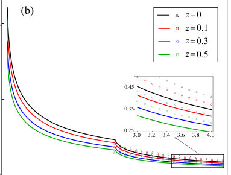
<figcaption class="paper-figure-caption"><b>Fig 2.</b> FIG. 2. (a) Scaling function f(s) and (b) scaling function h(s) for different values of the dimensionless p-wave interac- tion strength z, computed at y = −0.95. The dimensional crossover is traversed in two stages: first, s2 = 0.01 is held fixed while s1 is varied from 0 to 2, driving the crossover from the quasi-1D regime to a quasi-2D regime; then s1 = 2 is held fixed while s2 is varied from 0.01 to 2, further driv- ing the crossover from the quasi-2D regime to the anisotropic 3D regime. Solid curves show the full results from Eqs. (30) and (35); the symbols on the right mark the 3D asymptotic values, and the numbers on the left indicate the quasi-1D lim- iting values. Increasing z...</figcaption>
</figure>
<figure class="paper-figure-card">
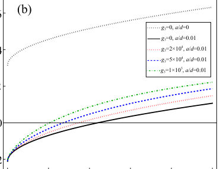
<figcaption class="paper-figure-caption"><b>Fig 3.</b> FIG. 3. (a) Asymptotic 3D energy per particle E/N (in units of 10−6ℏ2/2ma2) as a function of the density n (in units of 10−5a−3) for g3 = 0 (black solid), 2×104 (red dotted), 5×104</figcaption>
</figure>
<figure class="paper-figure-card">
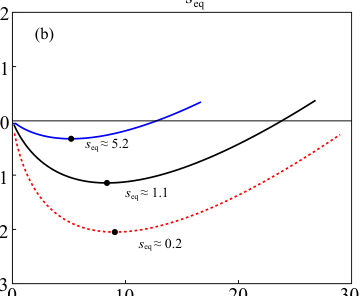
<figcaption class="paper-figure-caption"><b>Fig 4.</b> FIG. 5. (a) Equilibrium density neqa3 versus seq at y = −0.95 and a/d = 0.01, calculated from the full f(s) [Eq. (30)]. Curves are for g3 = 0 (black solid), 5.76 × 104 (blue dashed), and 1.15×105 (red dotted). They are labelled by the density- independent g3 because zeq = g3neqa3/2 varies along each branch; over the range shown the self-consistent values are zeq = 0.075–0.140 and 0.113–0.212. Open diamonds and squares denote the 3D [Eq. (38)] and quasi-1D [Eq. (44)] asymptotes at g3 = 0, plotted for seq ≳2 and seq ≲0.7, re- spectively. (b) Energy per particle in units of 10−6ℏ2/(2ma2), the same units as Fig. 3, versus density in units of 10−6a−3, at g3 = 0. The three lattice depths give seq...</figcaption>
</figure>
<figure class="paper-figure-card">
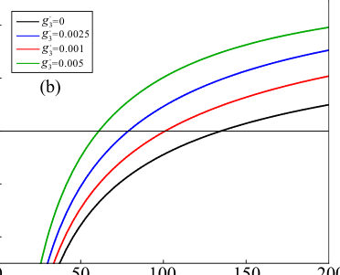
<figcaption class="paper-figure-caption"><b>Fig 5.</b> FIG. 4. (a) Asymptotic quasi-1D energy per particle E/N1D (in units of ℏ2/2ma2 12) as a function of the dimensionless density n1D (in units of |a|−1) at y = −0.95, for g′ 3 = 0 (black), 0.001 (red), 0.0025 (blue), and 0.005 (green). A finite-density minimum appears, indicating the formation of a self-bound quasi-1D droplet. (b) Corresponding derivative ∂(E/N1D)/∂(n1D|a|) (same units), whose zero crossing deter- mines the equilibrium droplet density. As g′ 3 increases, the zero crossing shifts toward lower density, showing that the p- wave interaction weakens the fluctuation-induced binding of the quasi-1D droplet.</figcaption>
</figure>
</div>

<p><strong>Summary.</strong> This paper theoretically examines quantum droplets in a two-component Bose mixture confined by an optical lattice, analyzing the crossover from 3D to quasi-1D regimes. Using functional-integral methods, the authors show that the self-binding mechanism persists across this crossover, with the attraction sourced differently in the 3D versus 1D limits. The results quantify the influence of p-wave interactions on this induced binding.</p>
<p><strong>Why it may be interesting.</strong> This work provides a detailed theoretical understanding of how dimensionality and specific interspecies interactions (p-wave) govern the stability and binding mechanism of quantum droplets in engineered optical lattices.</p>
<details>
<summary>Detailed structure</summary>
<p><strong>Main problem.</strong> The study investigates quantum droplets in a symmetric two-component Bose mixture confined by an optical lattice, specifically focusing on the crossover between different dimensional regimes.</p>
<p><strong>Main result.</strong> The system supports a self-bound minimum across the dimensional crossover, with the attraction arising from different physical mechanisms (lattice vs. fluctuations) depending on the regime.</p>
<p><strong>Method.</strong> The analysis employs the Euclidean functional-integral framework, calculating observables like ground-state energy and quantum depletion at the Gaussian level.</p>
<p><strong>Model / system.</strong> The system is a two-component Bose mixture ($\psi_1, \psi_2$) subjected to a 2D transverse optical lattice, incorporating s-wave and p-wave interspecies interactions.</p>
<p><strong>Key observables.</strong> Ground-state energy, quantum depletion, and the equilibrium density across the dimensional crossover.</p>
<p><strong>Important parameters / regimes.</strong> Lattice depths ($t_1, t_2$), interspecies coupling ratio ($y = g_{12}/g$), and p-wave interaction strength ($g_p$).</p>
<p><strong>Assumptions / limitations.</strong> Assumes equal masses and intraspecies couplings, and uses the lowest-band approximation for the lattice confinement.</p>
<p><strong>Figures summary.</strong> Figures illustrate the lattice structure and the crossover from 3D to quasi-1D regimes, and show the energy per particle versus density, confirming the existence of a finite-density minimum.</p>
<p><strong>Paper structure.</strong> The paper builds from deriving the Euclidean action in the tight-binding regime, calculating the ground-state energy and quantum depletion via Gaussian fluctuations, and finally analyzing the resulting equation of state across the dimensional crossover.</p>
</details>
<details>
<summary>Abstract</summary>
<p>We study quantum droplets in a symmetric two-component Bose mixture with interspecies $p$-wave interactions and a two-dimensional transverse optical lattice. The lattice drives a crossover from an anisotropic three-dimensional gas to weakly coupled one-dimensional tubes. We calculate the ground-state energy and quantum depletion at the Gaussian level and derive their limiting forms. At $y=g_{12}/g=-0.95$, where the bare mean field is repulsive and no free-space droplet exists, the calculated bulk equation of state supports a self-bound minimum across the crossover: a negative lattice contribution at order $n^{2}$ supplies the attraction in the three-dimensional regime, and attractive fluctuations do so in the quasi-one-dimensional regime, with the intermediate, transdimensional range described quantitatively by neither limit. The interspecies $p$-wave interaction modifies only the spin branch. In the parameter range studied, increasing its strength lowers the equilibrium density across the crossover, consistently with a weakening of the induced binding.</p>
</details>
<p><sub><a href="#top">↑ back to top</a></sub></p>

<p><a id="paper-2609.11745"></a></p>
<h3 id="unraveling-the-kagome-antiferromagnetic-math321math-model-and-its-materials-an-integrated-approach"><a href="http://arxiv.org/abs/2609.11745v1">Unraveling the Kagome Antiferromagnetic $3J$ Model and Its Materials: An Integrated Approach</a></h3>
<p><strong>Authors:</strong> Xin Lu, Andreas Raikos, Menghan Song, Zezong Li, Lankun Han, Shiliang Li, Sylvain Capponi, Zi Yang Meng, Chengkang Zhou<br>
<strong>Type:</strong> both · <strong>Category:</strong> strongly correlated electrons · <strong>PDF:</strong> <a href="https://arxiv.org/pdf/2609.11745v1">https://arxiv.org/pdf/2609.11745v1</a><br>
<strong>Analysis basis:</strong> full PDF text, analyzed in chunks
<strong>Topic relevance:</strong> <code>analog quantum simulation</code> <strong>3/5</strong> · <code>methods for driven-dissipative</code> <strong>2/5</strong></p>
<div class="figure-strip-hint">↔ Scroll figures horizontally</div>
<div class="paper-figures-scroll">
<figure class="paper-figure-card">
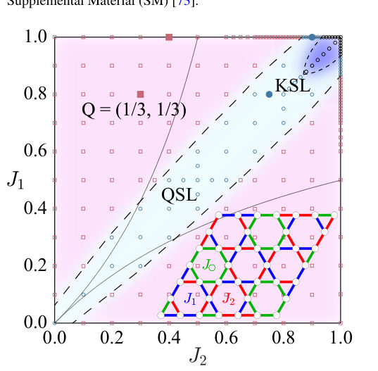
<figcaption class="paper-figure-caption"><b>Fig 1.</b> FIG. 1. Ground-state phase diagram of the 3J model. Two (1/3, 1/3) ordered phases and an intermediate QSL phase are identi- fied within 0 ≤J1,2 ≤1. The QSL phase is separated from the KSL ground state around the isotropic limit, J1 = J2 = J7. Open symbols denote the calculated parameter points, while solid symbols indicate the parameter points used for specific-heat calculations. The black dashed lines indicate the quantum phase boundaries determined in this work, and the gray solid lines show the classical phase bound- aries obtained from Ref. [60] for comparison. The inset displays an enlarged 27-site unit cell (in the (1/3, 1/3) ordered phase) of the 3J model on the kagome lattice, with...</figcaption>
</figure>
<figure class="paper-figure-card">
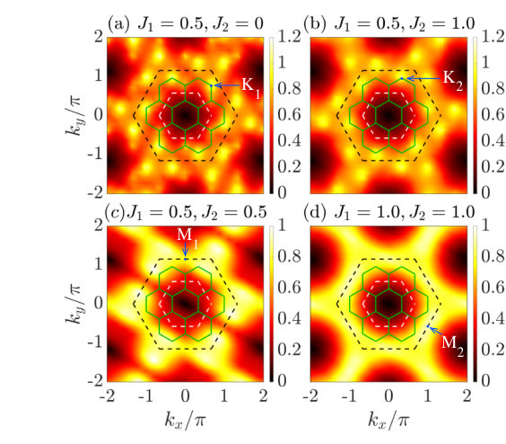
<figcaption class="paper-figure-caption"><b>Fig 2.</b> FIG. 2. Static spin structure factors. Representative static spin structure factors S (k) in the (a,b) (1/3, 1/3) ordered phases, (c) QSL phase, and (d) KSL phase. The ordering peaks in (a) occur at Q = K1, whereas those in (b) occur at Q = K2. The positions of M1 and M2 are also denoted directly in (c) and (d). The black dashed hexagon denotes the Brillouin zone (BZ) of the triangular lattice (1- site unit cell), the white dashed hexagon represents the BZ of the kagome lattice (3-site unit cell), and the green solid hexagon corre- sponds to the BZ of the 3J model (9-site unit cell). Here, all S (k) are obtained by Fourier transformation of all-to-all spin-spin correla- tions. The...</figcaption>
</figure>
<figure class="paper-figure-card">
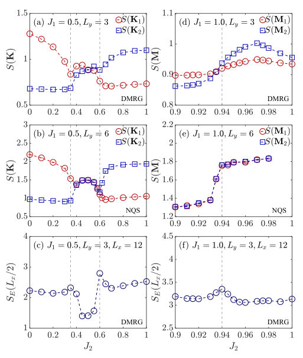
<figcaption class="paper-figure-caption"><b>Fig 3.</b> FIG. 3. J2 dependence of S (k) and entanglement entropy. (a) J2 dependence of S (k) at K1 and K2 for J1 = 0.5 on YC6 (Ly = 3, Lx = 12) cylinders obtained by DMRG. The kink-like features near J2 ≃0.35 and 0.6, indicated by the gray dashed lines, signal phase transitions. (b) Same as (a) but on a torus (Ly = 6, Lx = 6) obtained from NQS calculations. (c) J2 dependence of the entan- glement entropy S E(x) at the bulk of cylinders x = Lx/2, yielding critical points consistent with those identified in (a) and (b). (d-f) Same as (a-c), respectively, but for J1 = 1.0, with S (k) evaluated at M1 and M2, where the phase transition occur near J2 ≃0.94.</figcaption>
</figure>
<figure class="paper-figure-card">
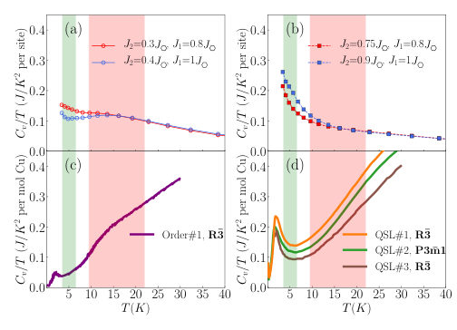
<figcaption class="paper-figure-caption"><b>Fig 4.</b> FIG. 4. Computed and experimental specific heat. (a) and (b) Calculated Cv/T from XTRG for representative parameter sets in the (1/3, 1/3) ordered and QSL phases, respectively. The tem- perature scale is set by J7 = 63 K following the experimen- tal estimate [80]. (c) Experimental Cv/T for Y3Cu9(OH)19Cl8 from Ref. [57] (ordered, marked as Order#1), which crystallizes in the R¯3 space group and realizes the (1/3, 1/3)-ordered phase. (d) Experimental Cv/T for three candidate QSL materials: disor- dered LuCu3(OH)6Br2[Brx(OH)1−x] in the R¯3 space group (orange, QSL#1) [56]; YCu3(OH)6Br2[Brx(OH)1−x] (green, QSL#2), which crystallizes in the P¯3m1 space group but is also considered a 3J- model...</figcaption>
</figure>
<figure class="paper-figure-card">
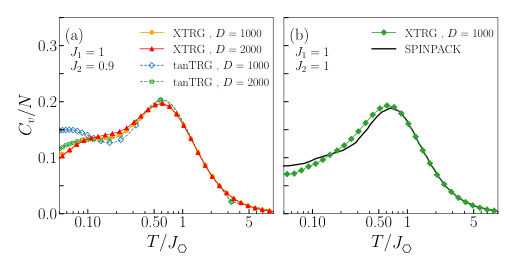
<figcaption class="paper-figure-caption"><b>Fig 5.</b> FIG. 5. Specific heat of the 3J and 1J models. (a) Calculated spe- cific heat density Cv/N, from XTRG and tanTRG caluations with bond dimension D = 1000 and 2000. (b) Cv/N at the isotropic point J1 = J2 = J7, from the XTRG calculations with D = 1000. The black line shows the corresponding Cv/N from SPINPACK calcula- tions reported in Ref. [82].</figcaption>
</figure>
</div>

<p><strong>Summary.</strong> This paper provides an integrated theoretical and computational study of the Kagome 3J model, aiming to understand Quantum Spin Liquid behavior in materials like YCu3(OH)6Br2. By employing advanced tensor network and machine learning techniques, the authors map out the phase diagram and predict characteristic signatures, such as specific heat anomalies, which are then directly compared to experimental measurements.</p>
<p><strong>Why it may be interesting.</strong> The rigorous combination of advanced quantum simulation techniques (NQS/ViT, XTRG/tanTRG) to predict measurable thermodynamic quantities like specific heat makes this work highly relevant for experimental condensed matter physicists studying frustrated magnets.</p>
<details>
<summary>Detailed structure</summary>
<p><strong>Main problem.</strong> The study investigates the ground-state and finite-temperature properties of the Kagome antiferromagnetic 3J model to characterize the nature and stability of putative Quantum Spin Liquid (QSL) phases.</p>
<p><strong>Main result.</strong> The research identifies an intermediate QSL phase sandwiched between two magnetically ordered phases, and successfully connects the model's theoretical predictions (like specific heat anomalies) to measurable experimental signatures in 3J materials.</p>
<p><strong>Method.</strong> The study employs a combination of advanced numerical techniques, including DMRG, Neural Quantum States (NQS) with Vision Transformers (ViT), and thermal tensor-network methods (XTRG and tanTRG).</p>
<p><strong>Model / system.</strong> The system is the Kagome antiferromagnetic 3J Model, designed for the candidate Dirac QSL material YCu3(OH)6Br2[Br1-x(OH)x]. The Hamiltonian involves three inequivalent antiferromagnetic couplings (J1, J2, J7).</p>
<p><strong>Key observables.</strong> Specific heat (Cv/T), static spin structure factors S(k), and entanglement entropy Se(x).</p>
<p><strong>Important parameters / regimes.</strong> The model is analyzed across various coupling regimes (J1, J2, J7) and compares results to experimental measurements across different temperature scales.</p>
<p><strong>Assumptions / limitations.</strong> The analysis assumes that the observed thermal and structural signatures are robust indicators for distinguishing between ordered, QSL, and KSL phases, and that the ML/tensor network methods accurately capture the system's physics.</p>
<p><strong>Figures summary.</strong> Figures illustrate the ground-state phase diagram, static spin structure factors S(k) distinguishing phases, and comparisons of calculated specific heat (Cv/T) against experimental data.</p>
<p><strong>Paper structure.</strong> The paper systematically analyzes the model using multiple computational tools: first, establishing the phase diagram using DMRG/NQS; second, characterizing phases via S(k) and entanglement entropy; and finally, validating the findings by calculating and comparing finite-temperature specific heat using XTRG and tanTRG against real materials.</p>
</details>
<details>
<summary>Abstract</summary>
<p>We investigate the ground-state and finite-temperature properties of the kagome antiferromagnetic Heisenberg model with three inequivalent couplings, dubbed the 3J model, which is designed for the candidate Dirac quantum spin liquid (QSL) material YCu$_3$(OH)$_6$Br$_2$[Br$_{1-x}$(OH)$_x$] (see, e.g., Zeng et al., 2024). Employing large-scale density-matrix renormalization group (DMRG) supplemented by neural quantum states (NQS) simulations, we identify an intermediate QSL phase between two magnetically ordered phases. We also find that this QSL is separated from the kagome spin liquid ground state at the isotropic limit. To establish a direct comparison with experiments, we compute the specific heat of the model by means of advanced exponential (XTRG) and tangent-space (tanTRG) thermal tensor-network methods. In the magnetically ordered phase, the specific heat over temperature exhibits a shoulder at a temperature that is a fraction of the coupling strength $J_{hex}$, which disappears in the QSL phase. These universal behaviors are consistent with the experimentally observed specific heat in 3J materials for both ordered and QSL candidate samples. Our work thus connects microscopic models with experimentally measurable signatures, exemplifying an integrated approach (see Meng et al., 2026) to understanding QSL phenomena in frustrated quantum magnets, with 3J materials serving as a representative case and providing a foundation for future studies.</p>
</details>
<p><sub><a href="#top">↑ back to top</a></sub></p>

<p><a id="paper-2609.10837"></a></p>
<h3 id="controlling-topology-in-flux-mismatched-hofstadter-bilayers"><a href="http://arxiv.org/abs/2609.10837v1">Controlling topology in flux-mismatched Hofstadter bilayers</a></h3>
<p><strong>Authors:</strong> Adel Ali, Alexey Belyanin<br>
<strong>Type:</strong> theory · <strong>Category:</strong> other · <strong>PDF:</strong> <a href="https://arxiv.org/pdf/2609.10837v1">https://arxiv.org/pdf/2609.10837v1</a><br>
<strong>Analysis basis:</strong> full PDF text, analyzed in chunks
<strong>Topic relevance:</strong> <code>analog quantum simulation</code> <strong>3/5</strong> · <code>quantum measurements</code> <strong>1/5</strong></p>
<div class="figure-strip-hint">↔ Scroll figures horizontally</div>
<div class="paper-figures-scroll">
<figure class="paper-figure-card">
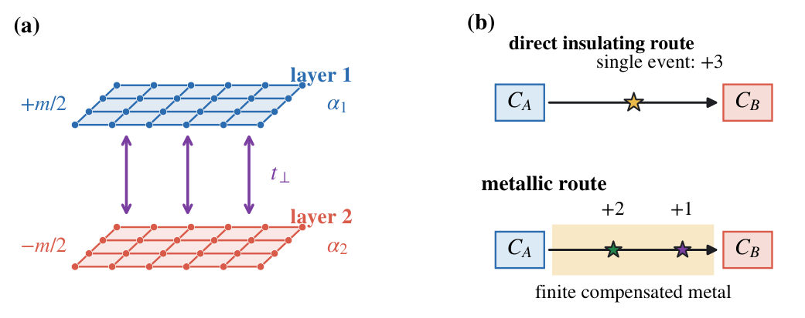
<figcaption class="paper-figure-caption"><b>Fig 1.</b> FIG. 1. Obstructed tunneling and two spectral routes for Chern transfer. (a) Two locally coupled layers experience fluxes α1 ̸= α2 and opposite shifts ±m/2. (b) The same endpoint transfer can occur via a “clean” route, i.e., through an isolated single insulating critical bias or through a finite compensated metal. Topology fixes the net transferred charge, whereas energetics fixes the route. Here CB −CA = 3 corresponding to the example in the text.</figcaption>
</figure>
<figure class="paper-figure-card">
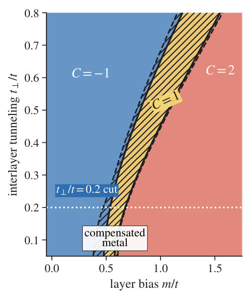
<figcaption class="paper-figure-caption"><b>Fig 2.</b> FIG. 3. Finite reentrant-metal region. For (α1, α2) = (1/5, 2/5), solid curves are direct-gap/Weyl transitions and dashed curves are the Lifshitz boundaries ∆ind = 0. Their separation encloses a finite compensated-metal region in the (m, t⊥) plane. The dotted line marks the cut t⊥/t = 0.2 analyzed in Fig. 4.</figcaption>
</figure>
<figure class="paper-figure-card">
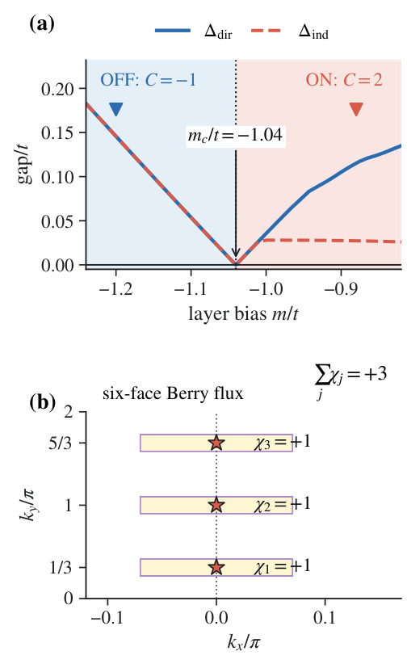
<figcaption class="paper-figure-caption"><b>Fig 3.</b> FIG. 2. Direct insulating C = −1 →2 transfer. (a) Direct and indirect gaps for (α1, α2) = (1/3, 5/6), nocc = 2, and t⊥/t = 0.2. Both gaps vanish at the common critical bias mc/t = −1.04 and reopen immediately on either side. (b) The three nodes at kx = 0 are independently enclosed by small surfaces in (kx, ky, m); integration of the occupied-frame Berry flux through all six faces gives χj = +1 for each node and P</figcaption>
</figure>
<figure class="paper-figure-card">
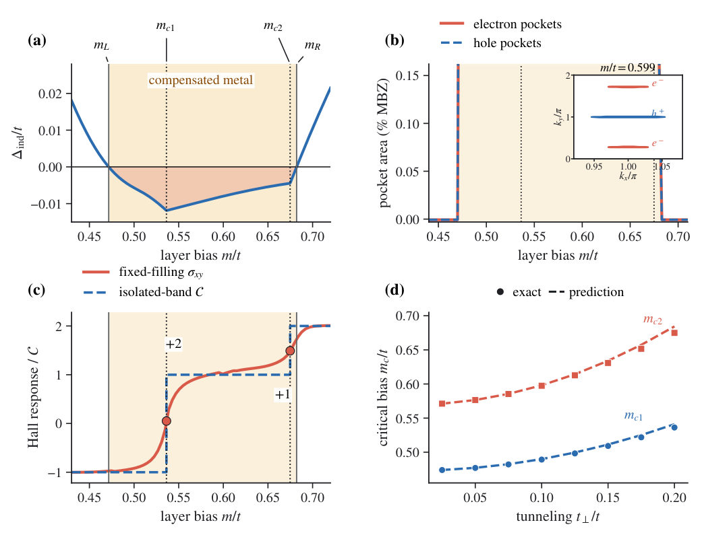
<figcaption class="paper-figure-caption"><b>Fig 4.</b> FIG. 4. Topological reconstruction inside a compensated metal. (a) The indirect gap is negative only for mL &lt; m &lt; mR (shaded). Dotted lines mark the internal Weyl events mc1, mc2. (b) Equal electron and hole pocket areas demonstrate compensation; the inset shows the one hole and two electron Fermi contours at m/t = 0.599. (c) The directly isolated lowest band changes as −1 →1 →2, whereas the occupied-state Hall conductivity remains continuous and noninteger. Independent closed boxes give node charges (+1, +1) at mc1 and +1 at mc2. Thus Lifshitz and Chern-transfer transitions occur at four distinct biases.(d) Exact critical biases from the full bilayer Hamiltonian (symbols) compared with the...</figcaption>
</figure>
<figure class="paper-figure-card">
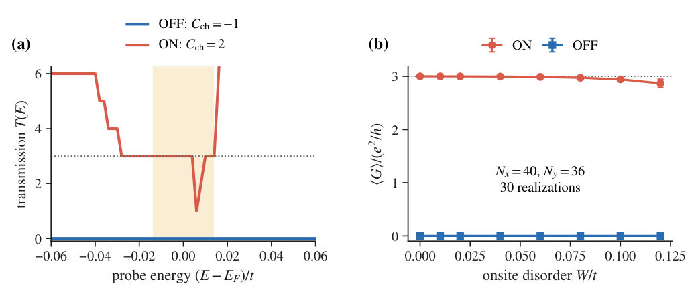
<figcaption class="paper-figure-caption"><b>Fig 5.</b> FIG. 5. (a) Clean transmission of the interface cylinder: the OFF state is insulating, while the ON state has a three-channel plateau. (b) Disorder-averaged conductance at the common gap center; error bars are one standard deviation over 30 realizations for W &gt; 0.</figcaption>
</figure>
</div>

<p><strong>Summary.</strong> This work demonstrates that by creating a flux mismatch in stacked 2D materials, the destructive effect of interlayer tunneling can be circumvented. This allows for the electrical control and quantized transfer of topological invariants, such as the Chern number, leading to programmable Chern phases and novel metallic transport regimes.</p>
<p><strong>Why it may be interesting.</strong> The concept of using synthetic dimensions (bias/momentum space) to engineer topological transitions is highly relevant to understanding engineered quantum states in condensed matter systems, bridging concepts from topological insulators to controllable quantum devices.</p>
<details>
<summary>Detailed structure</summary>
<p><strong>Main problem.</strong> The primary challenge addressed is how to electrically control topological electronic states in stacked 2D materials without the interlayer tunneling term destroying the necessary band crossings.</p>
<p><strong>Main result.</strong> The authors show that flux mismatch between layers creates topologically obstructed tunneling, allowing for the controlled, quantized transfer of Chern numbers and the realization of programmable Chern phases.</p>
<p><strong>Method.</strong> The mechanism is analyzed by projecting the Hamiltonian onto resonant multiplets, identifying topological obstructions (zeros in projected tunneling), and calculating the resulting Chern number transfer via Berry flux integration.</p>
<p><strong>Model / system.</strong> The system is a Hofstadter bilayer, modeled as stacked 2D materials (like graphene/hBN) where the layers experience different magnetic fluxes ($\alpha_1 
eq \alpha_2$). The physics is governed by the interplay between interlayer tunneling and the magnetic flux mismatch.</p>
<p><strong>Key observables.</strong> Chern number ($C$), Hall conductivity ($\sigma_{xy}$), Berry flux ($\chi_j$), and the existence of Weyl monopoles in momentum-bias space.</p>
<p><strong>Important parameters / regimes.</strong> Flux mismatch ($\alpha_1 
eq \alpha_2$), interlayer bias ($m$), and the relative strength of tunneling versus gap energies.</p>
<p><strong>Assumptions / limitations.</strong> The analysis relies on projecting the system onto two resonant multiplets and assumes the accuracy of the decoupled-layer overlap approximation.</p>
<p><strong>Figures summary.</strong> Figures illustrate the obstructed tunneling mechanism, the two spectral routes for Chern transfer (insulating vs. metallic), and the resulting continuous, nonquantized Hall response during topology changes.</p>
<p><strong>Paper structure.</strong> The paper establishes the physical problem (tunneling gap closing), introduces the mechanism (topological obstruction due to flux mismatch), derives the consequences (Chern transfer, reentrant metal), and verifies the findings using multiple theoretical calculations (Berry flux, TKNN).</p>
</details>
<details>
<summary>Abstract</summary>
<p>Stacked two-dimensional materials provide a promising platform for electrically controlling topological electronic states. However, tunneling between layers hybridizes their bands and removes the crossings needed to change topology. We show that this does not always have to be the case. Band crossings and associated Weyl points are topologically enforced in Hofstadter bilayers whose layers experience different magnetic fluxes. When resonant magnetic Bloch multiplets carry unequal Chern numbers, their projected tunneling is topologically obstructed and must vanish at isolated momenta. Sweeping the layer bias through these zeros creates synthetic Weyl monopoles in momentum-bias space that transfer the Chern mismatch. We demonstrate two consequences: a direct transition between insulating Chern phases and a reentrant compensated metal in which Lifshitz transitions bound the metallic window while internal Weyl events reconstruct the band topology. Consequently, the fixed-filling Hall response remains continuous and nonquantized even as integer Chern number is transferred between bands. Berry-flux, TKNN, and interface calculations independently verify the mechanism and its multichannel chiral signature. We outline realizations in Moire and anomalous-Hall heterostructures, establishing flux mismatch as an experimentally accessible route to electrically programmable Chern phases and chiral transport.</p>
</details>
<p><sub><a href="#top">↑ back to top</a></sub></p>

<p><a id="paper-2609.11021"></a></p>
<h3 id="full-rank-noise-forbids-long-range-entanglement-swapping"><a href="http://arxiv.org/abs/2609.11021v1">Full-Rank Noise Forbids Long-Range Entanglement Swapping</a></h3>
<p><strong>Authors:</strong> Xuan Du Trinh, Nicholas Pardave, Angie Huang, Xiangyi Meng, Nengkun Yu<br>
<strong>Type:</strong> both · <strong>Category:</strong> quantum information and computing · <strong>PDF:</strong> <a href="https://arxiv.org/pdf/2609.11021v1">https://arxiv.org/pdf/2609.11021v1</a><br>
<strong>Analysis basis:</strong> full PDF text, analyzed in chunks
<strong>Topic relevance:</strong> <code>methods for driven-dissipative</code> <strong>3/5</strong> · <code>correlated / nonlocal dissipation</code> <strong>1/5</strong></p>
<div class="figure-strip-hint">↔ Scroll figures horizontally</div>
<div class="paper-figures-scroll">
<figure class="paper-figure-card">
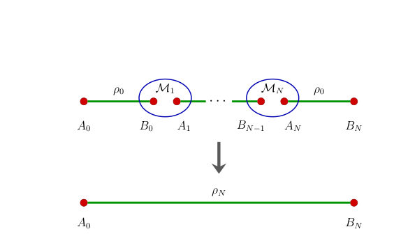
<figcaption class="paper-figure-caption"><b>Fig 1.</b> FIG. 1. Postselected swapping chain. The N + 1 links ρ0 oc- cupy the qubit pairs (Ai, Bi), and intermediate node i post- selects the entangled outcome |Ψi⟩= (I ⊗Mi) |Φ+⟩on its pair (Bi−1, Ai). Tracing out the measured qubits leaves the state ρN of the boundary pair A0BN, in which each outcome enters as the filter map Mi(X) = M ∗ i XM T i . The outcomes |Ψi⟩need not be Bell states or maximally entangled. Postse- lection keeps only the branch with the intended record {Mi}, and the rule choosing each measurement may adapt to the outcomes already observed.</figcaption>
</figure>
<figure class="paper-figure-card">
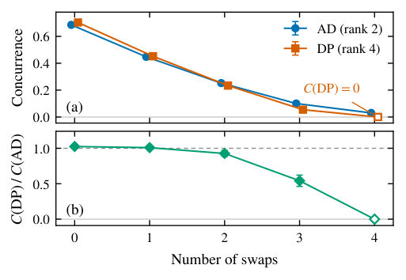
<figcaption class="paper-figure-caption"><b>Fig 2.</b> FIG. 2. Experimental verification of rank-aware distinction in entanglement swapping. The states are prepared under one- sided, rank-2 amplitude-damping (AD) and rank-4 depolariz- ing (DP) channels respectively on IBM’s Heron R3 processor (ibm boston), with an initial concurrence C(AD) ≈C(DP) ≈ 0.7. The ratio monotonically decays to zero (solid), signaling the sudden death of C(DP) as the theory predicts (dashed). Eventually both C(DP) and C(AD) reach zero due to exper- imental imperfection (inset).</figcaption>
</figure>
</div>

<p><strong>Summary.</strong> This work establishes a fundamental difference in entanglement persistence based on the rank of noise in quantum repeater links. Full-rank noise inevitably leads to a finite 'entanglement horizon,' while rank-deficient links can sustain entanglement indefinitely through specific postselection strategies. This has implications for designing robust quantum networks.</p>
<p><strong>Why it may be interesting.</strong> The distinction between full-rank and low-rank noise provides a powerful, physically motivated criterion for the feasibility of long-distance quantum communication, linking quantum information theory to the structure of quantum channels.</p>
<details>
<summary>Detailed structure</summary>
<p><strong>Main problem.</strong> The paper investigates whether long-range entanglement can be established using quantum repeaters when the elementary links are corrupted by full-rank noise, especially under adaptive postselection.</p>
<p><strong>Main result.</strong> Full-rank noise imposes a finite 'entanglement horizon' beyond which entanglement swapping fails, whereas rank-deficient links can sustain entanglement indefinitely on specific postselected branches.</p>
<p><strong>Method.</strong> The authors use the Choi operator formalism and analyze the decay of the end-to-end state by comparing the behavior of full-rank versus low-rank link channels.</p>
<p><strong>Model / system.</strong> The system models quantum repeaters extending entanglement over noisy two-qubit links, analyzed using concepts from matrix-product density operators in many-body physics.</p>
<p><strong>Key observables.</strong> Concurrence, the entanglement horizon, and the network 'score' $\beta(P)$ are key observables used to quantify entanglement decay.</p>
<p><strong>Important parameters / regimes.</strong> The link rank (full vs. low), the noise parameter $\eta$, and the depth $N$ of the repeater chain are crucial parameters.</p>
<p><strong>Assumptions / limitations.</strong> The analysis often relies on reducing the full-rank problem to an isotropic chain model, and some derivations use approximations for small noise/storage loads.</p>
<p><strong>Figures summary.</strong> Figure 2 compares the decay of concurrence for full-rank (DP) versus rank-deficient (AD) channels, showing the theoretical distinction between the two noise types.</p>
<p><strong>Paper structure.</strong> The paper progresses from establishing the finite horizon for full-rank links (Theorem 1) to constructing low-rank counterexamples, and finally analyzing the role of storage and purification in maintaining entanglement.</p>
</details>
<details>
<summary>Abstract</summary>
<p>Quantum repeaters extend entanglement by swapping noisy elementary links. We prove that full-rank noise forbids this at long range: for any entangled full-rank two-qubit link, there is a finite depth beyond which no end-to-end entanglement can be established regardless of the measurement outcomes on intermediate qubits, even under any adaptive postselected strategy. This limit is set by one spectral parameter of the link, giving a no-go criterion for repeater routing. In contrast, we construct link state families of rank three and rank two that admit postselected measurement outcome branches of exponentially small probability but with strictly positive concurrence at every finite depth. Swapping experiments on a superconducting processor show that links of equal initial concurrence but different rank behave differently under postselected swapping. In the language of many-body physics, the chain is a matrix-product density operator, and full-rank bonds forbid long-range localizable entanglement, while rank-deficient bonds can sustain it.</p>
</details>
<p><sub><a href="#top">↑ back to top</a></sub></p>

<p><a id="paper-2609.10678"></a></p>
<h3 id="geometric-ginzburg-landau-theory-of-charge-ordering-and-commensurability"><a href="http://arxiv.org/abs/2609.10678v1">Geometric Ginzburg-Landau theory of charge ordering and commensurability</a></h3>
<p><strong>Authors:</strong> Aneesh Agarwal, Rutvij Gholap, Mohammad Saeed Bahramy, Robert-Jan Slager<br>
<strong>Type:</strong> theory · <strong>Category:</strong> strongly correlated electrons · <strong>PDF:</strong> <a href="https://arxiv.org/pdf/2609.10678v1">https://arxiv.org/pdf/2609.10678v1</a><br>
<strong>Analysis basis:</strong> full PDF text, analyzed in chunks
<strong>Topic relevance:</strong> <code>Frenkel-Kontorova</code> <strong>3/5</strong> · <code>Keldysh / 2PI / non-Gaussian methods</code> <strong>1/5</strong></p>
<div class="figure-strip-hint">↔ Scroll figures horizontally</div>
<div class="paper-figures-scroll">
<figure class="paper-figure-card">
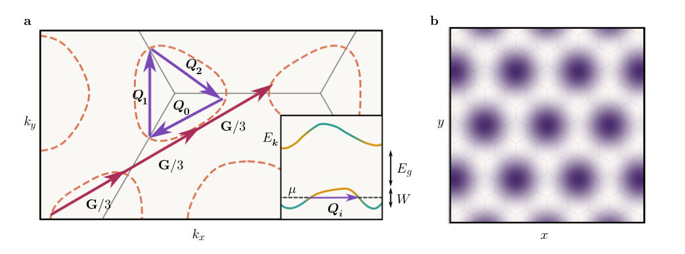
<figcaption class="paper-figure-caption"><b>Fig 1.</b> FIG. 1. Geometric mechanism for charge-density-wave formation in flat-band systems. a Schematic illustration of the geometric origin of charge ordering. In flat and quasi-flat band systems, charge-density-wave instabilities are enhanced when Bloch states at momenta separated by an ordering wavevector Qi undergo a strong change in flavor character, as illustrated by the color exchange in the band-structure inset. In hexagonal systems, three symmetry-related wavevectors, Q0, Q1, and Q2, further enable a higher-order triangular scattering process (purple) that contributes to wavevector selection. At commensurate wavevectors Qi = Γ/3, interference between triangular and Umklapp (magenta)...</figcaption>
</figure>
<figure class="paper-figure-card">
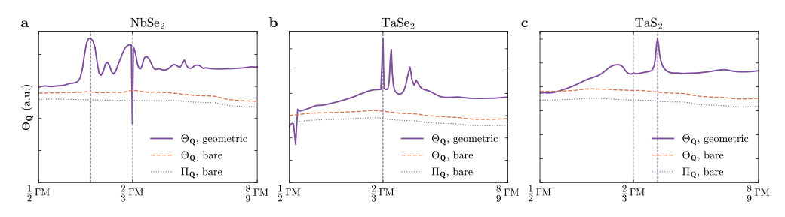
<figcaption class="paper-figure-caption"><b>Fig 2.</b> FIG. 2. CDW transition driver ΘQ as a function of Q on the ΓM line for different materials. ΘQ is plotted as a function of Q between 1/2ΓM and 8/9ΓM for a NbSe2 (T ≈23K), b TaSe2 (T ≈35K), and c TaS2 (T ≈49K), and peaks near/at 2/3ΓM are observed for all three materials. The Q-domain is so chosen since the bare Lindhard susceptibility (dotted) exhibits a broad peak here and is inconclusive in determining the CDW wavevector. Inclusion of higher-order terms in just their energetic form (orange dashed line) is still inconclusive. The geometric enhancements studied here (purple solid line) then become the dominant mechanism behind CDW formation. Importantly, note that an incommensurate CDW is...</figcaption>
</figure>
<figure class="paper-figure-card">

<figcaption class="paper-figure-caption"><b>Fig 3.</b> FIG. 3. Integrand for cubic coefficient at commensurate Q = 2/3ΓM. Normalized contributions to the coefficient of ∆3 in the Ginzburg- Landau free energy of different materials has been shown as a function of k in the Brillouin Zone. The integrand consists of two terms: a-c triangle scattering processes where ∑Qi = 0, and d-f umklapp scattering processes where ∑Qi = G, a reciprocal lattice vector. Corresponding diagrams for the g triangle and h umklapp scattering are also sketched. The phase of the respective integrands is emphasized using different colors for positive and negative contributions. Interference between the triangle and umklapp scattering suggests incommensurate CDW in NbSe2...</figcaption>
</figure>
<figure class="paper-figure-card">

<figcaption class="paper-figure-caption"><b>Fig 4.</b> FIG. 4. Diagrammatic representations of GL coefficients. The effective action and hence the GL free energy functional affords diagrammatic representations as shown of the electron-phonon interaction at a quadratic, b cubic, and c quartic order. d At commensurate wavevectors (for example, 2/3ΓM in the TMDs considered here), the cubic term involves an extra contribution from umklapp scattering, whose phase interference with the normal cubic term in (b) determines a commensurability transition. e All terms involve interaction vertices of this form, where a bare electronic state in band n and wavevector k is scattered by a phonon of wavevector q into a state in band m and wavevector k+q. The...</figcaption>
</figure>
</div>

<p><strong>Summary.</strong> This paper develops a geometric Ginzburg-Landau theory to explain Charge Density Wave (CDW) formation in materials like TMDs. It shows that quantum geometry provides essential, previously uncaptured contributions to the phase transition free energy. The resulting theory yields robust criteria that successfully predict CDW ordering wavevectors where conventional electronic models fail.</p>
<p><strong>Why it may be interesting.</strong> The explicit incorporation of quantum geometry into a phase transition theory provides a powerful, generalizable tool for understanding how subtle electronic structure effects dictate macroscopic material properties like CDW formation, which is relevant to many strongly correlated systems.</p>
<details>
<summary>Detailed structure</summary>
<p><strong>Main problem.</strong> Deriving a geometric Ginzburg-Landau theory to accurately describe Charge Density Wave (CDW) formation and commensurability transitions, especially in systems where standard electronic criteria fail.</p>
<p><strong>Main result.</strong> The theory establishes that quantum geometry plays an essential role, providing a general criterion for CDW formation that successfully predicts ordering wavevectors in TMDs where simpler models fail.</p>
<p><strong>Method.</strong> The authors derive an effective Ginzburg-Landau functional by integrating out phonon degrees of freedom from an electron-phonon Hamiltonian, leading to modified susceptibility tensors.</p>
<p><strong>Model / system.</strong> The work focuses on Charge Density Waves (CDWs) in Transition Metal Dichalcogenides (TMDs) with hexagonal lattices, utilizing a Ginzburg-Landau framework expanded to include higher-order geometric terms.</p>
<p><strong>Key observables.</strong> The CDW driver ($\Theta_Q$), the quadratic susceptibility tensor ($\chi$), and the coefficients of the GL functional ($\Pi_Q, |\gamma_Q|, eta_Q$).</p>
<p><strong>Important parameters / regimes.</strong> The wavevector $Q$, the lattice symmetry ($C_3$), and the relative strength of quantum geometric enhancements versus bare susceptibility.</p>
<p><strong>Assumptions / limitations.</strong> The analysis assumes that the coupling function $g_q$ is flat over relevant $q$ states to isolate electronic contributions, and that the system can be reduced to a scalar order parameter due to susceptibility anisotropy.</p>
<p><strong>Figures summary.</strong> Figures illustrate the geometric mechanism for CDW formation using three symmetry-related wavevectors in hexagonal systems, and plot the CDW driver ($\Theta_Q$) for various TMDs, showing geometric enhancements selecting the correct wavevector.</p>
<p><strong>Paper structure.</strong> The paper builds from deriving the geometric GL theory for CDW instability, establishing the general criterion, benchmarking it on TMDs, and refining the theory by including higher-order terms (like sextic terms) to resolve discrepancies in the predicted ordering wavevector.</p>
</details>
<details>
<summary>Abstract</summary>
<p>The concept of quantum geometry has recently led to reinvigorated insights in a wide range of fields including physical responses, superconductivity, and optical transitions, with effects most pronounced in systems with nearly flat dispersion. Here, we show that it plays an essential role in charge density wave formation (CDW) -- an important physical phenomenon that is responsible for driving various sharp changes in material transport properties including metal-insulator transitions. We derive an effective Ginzburg-Landau theory including uncharted contributions and, as a highlight, discover a general criterion for both CDW formation and commensurability transitions where underlying electron-phonon interactions manifest purely as electronic quantum geometric enhancements/suppressions. We benchmark our framework in a class of transition-metal dichalcogenides and resolve a longstanding puzzle where well-established purely kinetic CDW criteria fail in describing the correct ordering wavevector. Besides rendering robust criteria and fundamental insights that are immediately relevant to several experimental charge ordering systems, our theory can also be applied directly to other phonon-mediated phases such as superconductivity, and can be used as an important tool to explore the interplay between various such states. More generally, our framework provides a recipe for investigating the role of quantum geometry in phase transitions.</p>
</details>
<p><sub><a href="#top">↑ back to top</a></sub></p>

<p><a id="paper-2609.11881"></a></p>
<h3 id="low-temperature-thermodynamics-of-math343math-triangular-lattice-quantum-spin-liquid-candidate-tlybsmath344math"><a href="http://arxiv.org/abs/2609.11881v1">Low temperature thermodynamics of $S_{\mathrm{eff}}=1/2$ triangular lattice quantum spin liquid candidate TlYbS$_2$</a></h3>
<p><strong>Authors:</strong> Bishnu P. Belbase, Arjun Unnikrishnan, Piyush Chhallare, Mohan B. Neupane, Eun Sang Choi, Sebastian Erdmann, Muhammad U. Akbar, Mamoun Hemmida, H. -A. Krug von Nidda, Philipp Gegenwart, Arnab Banerjee<br>
<strong>Type:</strong> experiment · <strong>Category:</strong> strongly correlated electrons · <strong>PDF:</strong> <a href="https://arxiv.org/pdf/2609.11881v1">https://arxiv.org/pdf/2609.11881v1</a><br>
<strong>Analysis basis:</strong> full PDF text, analyzed in chunks
<strong>Topic relevance:</strong> <code>analog quantum simulation</code> <strong>3/5</strong></p>
<div class="figure-strip-hint">↔ Scroll figures horizontally</div>
<div class="paper-figures-scroll">
<figure class="paper-figure-card">

<figcaption class="paper-figure-caption"><b>Fig 1.</b> FIG. 1. (a) Crystal structure of TlYbS2, highlighting the stacking of Yb-based triangular layers separated by Tl–S slabs along the crystallographic c axis. (b) Top view of the ab plane showing the two-dimensional triangular network of Yb ions. The nearest- and next-nearest-neighbor in-plane Yb–Yb distances are indicated. (c) Single crystals of TlYbS2, showing their plate-like morphology. (d) Temperature-field (H −T) phase diagram of TlYbS2 constructed from AC susceptibility (χ′), DC magnetization (M), and specific heat (Cp(T)) measurements. Distinct magnetic regimes are highlighted by different shaded regions.</figcaption>
</figure>
<figure class="paper-figure-card">

<figcaption class="paper-figure-caption"><b>Fig 2.</b> FIG. 2. DC magnetization and ESR of TlYbS2. (a) Isothermal magnetization M(H) at T = 1.4 K for H ⊥c (blue) and H ∥c (black). For H ⊥c, a clear saturation is observed near Hsat ≃18 T, with a high-field linear fit (red dashed line) yielding Msat ≃1.7 µB per Yb3+. A 1/3 plateau near Msat/3, characteristic of the up–up–down configuration in TLAFs, is evident. For H ∥c, no saturation is observed up to 35 T. (b) Temperature dependence of the DC magnetic susceptibility χ(T) for H ⊥c under various applied fields. A field-induced anomaly emerges near 2.5 T. Inset: χ(T) measured at H = 0.1 T for H ⊥c and H ∥c. (c) Low-temperature Curie–Weiss analysis at H = 0.1 T. The main panel shows the fit for H...</figcaption>
</figure>
<figure class="paper-figure-card">

<figcaption class="paper-figure-caption"><b>Fig 3.</b> FIG. 3. AC susceptibility of TlYbS2 for H ⊥c. (a) Temperature dependence of the real part of the AC susceptibility, χ′(T), measured from 0.3 to 9 K under magnetic fields up to 2.5 T, showing the onset of a field-induced magnetic transition near 2.5 T. Inset: χ′(T) measured at zero DC field down to 20 mK. The susceptibility increases continuously upon cooling without developing a discernible peak. (b) Evolution of χ′(T) under higher magnetic fields, illustrating the emergence and systematic evolution of magnetic transitions with increasing field. Purple arrows mark the transition temperatures. Curves are vertically offset (non-uniformly) for clarity; the original, unshifted data are shown in...</figcaption>
</figure>
<figure class="paper-figure-card">

<figcaption class="paper-figure-caption"><b>Fig 4.</b> FIG. 4. Specific heat of TlYbS2. (a) Temperature dependence of Cp/T at zero field for TlYbS2 and its isostructural nonmagnetic analog TlLuS2. The anomaly at ∼530 mK is marked as T ∗. Inset: magnetic contribution to the specific heat, Cm/R, obtained after subtracting the phonon contribution and the fitted inverse-square contribution, showing two broad maxima centered near Tl ≃1.7 K and Th ≃4.6 K. (b) Temperature dependence of the phonon-subtracted specific heat, (Cm + CT −2)/T (blue), the fitted inverse-square contribution, CT −2/T (dashed blue), and the resulting magnetic contribution, Cm/T (dark red), together with the magnetic entropy Sm(T) (green, right y-axis). The horizontal dashed...</figcaption>
</figure>
<figure class="paper-figure-card">

<figcaption class="paper-figure-caption"><b>Fig 5.</b> FIG. 5. Scaled magnetic specific heat and schematic J1– J2 phase diagram for Yb-based triangular-lattice delafos- sites. (a) Comparison of the normalized magnetic specific heat, Cm/(T/J1), as a function of reduced temperature T/J1 for TlYbS2 and representative members of the Yb-based triangular-lattice delafossite family. The data for NaYbSe2, TlYbSe2, and KYbSe2 are taken from Refs. [6], [11], and [36], respectively. For TlYbS2, J1 = 8.35 K was used for the scal- ing. (b) Schematic phase diagram of the spin-1/2 triangular- lattice J1–J2 model, illustrating the evolution from the 120◦- ordered state to the quantum spin-liquid (QSL) regime. The phase boundary and the positions of previously...</figcaption>
</figure>
</div>

<p><strong>Summary.</strong> This paper experimentally investigates TlYbS2, a triangular-lattice antiferromagnet candidate for quantum spin liquid physics. Using multiple measurements, the authors confirm strong magnetic anisotropy and observe a specific heat anomaly suggesting weak magnetic ordering. The results place the material near the boundary between magnetic order and quantum disorder, providing key experimental data for understanding frustrated magnetism.</p>
<p><strong>Why it may be interesting.</strong> The study provides detailed experimental evidence on how geometric frustration and crystal anisotropy drive the system toward or away from a quantum spin liquid state, which is a central topic in modern condensed matter theory.</p>
<details>
<summary>Detailed structure</summary>
<p><strong>Main problem.</strong> The study investigates the competition between magnetic long-range order and quantum spin liquid (QSL) behavior in geometrically frustrated triangular-lattice antiferromagnets.</p>
<p><strong>Main result.</strong> The material exhibits a weak thermodynamic anomaly near 530 mK, and its low-temperature specific heat follows $C_m \propto T^{1.8}$, suggesting it lies near the boundary between weak magnetic order and a quantum-disordered state.</p>
<p><strong>Method.</strong> The research employed a comprehensive set of experimental techniques, including DC magnetization, AC susceptibility, electron spin resonance (ESR), and specific heat measurements across a wide temperature range.</p>
<p><strong>Model / system.</strong> The physical system is single-crystal TlYbS2, a Yb-based delafossite compound forming quasi-two-dimensional triangular layers of Yb3+ ions, whose low-energy magnetism is modeled by an effective spin-1/2 Hamiltonian.</p>
<p><strong>Key observables.</strong> Specific heat ($C_m \propto T^{1.8}$), magnetization plateaus (e.g., 1/3 plateau), and the temperature/field dependence of magnetic susceptibility.</p>
<p><strong>Important parameters / regimes.</strong> Easy-plane magnetic anisotropy ($g_{\perp}/g_{\parallel} \approx 6.9$), and the critical temperature/field associated with the observed anomalies ($\sim 530$ mK).</p>
<p><strong>Assumptions / limitations.</strong> The low-energy physics is effectively described by a spin-1/2 Hamiltonian, and the comparison to other Yb-based compounds helps map out the phase diagram.</p>
<p><strong>Figures summary.</strong> Figures illustrate the crystal structure, the magnetic anisotropy observed in magnetization curves under different field orientations, and the temperature dependence of the specific heat, highlighting the anomaly near 530 mK.</p>
<p><strong>Paper structure.</strong> The paper proceeds by first characterizing the crystal structure, then presenting measurements of magnetic properties (magnetization, susceptibility, ESR) to establish anisotropy, followed by specific heat measurements to probe the low-temperature magnetic excitations and phase transitions under applied fields.</p>
</details>
<details>
<summary>Abstract</summary>
<p>Geometrically frustrated triangular-lattice antiferromagnets exhibit a delicate competition between magnetic order and quantum spin liquid (QSL) behavior, with the Yb-based delafossite family $A$Yb$X_2$ providing a structurally clean platform for exploring this physics. Here, we report a comprehensive study of single-crystal TlYbS$_2$ using DC magnetization, AC susceptibility, electron spin resonance (ESR), and specific heat measurements extending from room temperature to the millikelvin regime. Single-crystal X-ray diffraction confirms a trigonal $R\bar{3}m$ structure comprising well-separated triangular layers of Yb$^{3+}$ ions with no detectable site disorder. At zero field, a weak thermodynamic anomaly is observed near $530$ mK, which may indicate the onset of a weakly ordered state similar to that reported in KYbSe$_2$. Below $300$ mK, the zero-field magnetic specific heat follows $C_{\rm m}\propto T^{1.8}$, close to a quadratic temperature dependence, in contrast to the linear temperature dependence reported for the sister compound TlYbSe$_2$, which has been described in terms of the interplay between spinons and thermally excited gauge-flux excitations. Magnetization and ESR measurements establish pronounced easy-plane magnetic anisotropy, with $g_\perp/g_\parallel \approx 6.9$. The anomaly near $530$ mK exhibits a strongly anisotropic response to magnetic field. For $H\perp c$, it remains visible up to approximately $2$ T and continuously evolves toward a field-induced ordered phase above approximately $2.5$ T, followed by a sequence of field-induced phases that includes a $1/3$ magnetization plateau between approximately $5$ and $8$ T and full polarization near $17$ T. In contrast, for $H\parallel c$, the anomaly weakens and is suppressed near $3$ T, consistent with the recently reported confinement--deconfinement transition from an ordered state to a field-induced QSL.</p>
</details>
<p><sub><a href="#top">↑ back to top</a></sub></p>

<p><a id="paper-2609.11151"></a></p>
<h3 id="qubit-qutrit-quantum-tomography-of-hadronic-math370math-and-math371math-systems"><a href="http://arxiv.org/abs/2609.11151v1">Qubit-Qutrit Quantum Tomography of hadronic $Λφ$ and $ΛK^{\ast 0}$ systems</a></h3>
<p><strong>Authors:</strong> Veronica Kanachova, Feng Liu, Zhoudunming Tu<br>
<strong>Type:</strong> theory · <strong>Category:</strong> other · <strong>PDF:</strong> <a href="https://arxiv.org/pdf/2609.11151v1">https://arxiv.org/pdf/2609.11151v1</a><br>
<strong>Analysis basis:</strong> full PDF text, analyzed in chunks
<strong>Topic relevance:</strong> <code>quantum measurements</code> <strong>3/5</strong></p>
<div class="figure-strip-hint">↔ Scroll figures horizontally</div>
<div class="paper-figures-scroll">
<figure class="paper-figure-card">

<figcaption class="paper-figure-caption"><b>Fig 1.</b> FIG. 1. Coordinate system, defined in the ΛV pair rest frame, where the two hadrons are back to back. The orthonormal triad is ˆk = ˆp Λ (the Λ momentum direction), ˆn ∝ˆpbeam × ˆk normal to the production plane, and ˆr = ˆn׈k, with ˆk׈r = ˆn. The daughter directions ˆq1 (proton from Λ →pπ−) and ˆq2 (K+ from ϕ →K+K−or K∗0 →K+π−) are each evaluated in the rest frame of their own parent but referred to this single shared triad.</figcaption>
</figure>
<figure class="paper-figure-card">

<figcaption class="paper-figure-caption"><b>Fig 2.</b> FIG. 2. Numerical verification of Theorem 1. For each trial a random input state is generated, the reconstruction ρmeas is built from its 23 accessible parameters, and the partial transpose is diagonalized. Left: λmin(ρTB meas) for 100 separable states — 65 of full rank 6 (filled circles) and 35 of reduced rank (open circles) — together with 100 entangled states (tri- angles). This numerical analysis is generated by Claude Opus 5 model.</figcaption>
</figure>
</div>

<p><strong>Summary.</strong> This work develops a novel quantum tomography technique for studying spin correlations in hadronic decays ($\Lambda V$ pairs). It addresses the fundamental challenge of reconstructing quantum states when experimental measurements only access a subset of parameters. The key achievement is establishing a rigorous, computable criterion—checking the minimum eigenvalue of the reconstructed density matrix—to certify entanglement despite the missing information.</p>
<p><strong>Why it may be interesting.</strong> While the physical system is particle/nuclear physics, the methodology—developing rigorous criteria for entanglement detection from severely incomplete quantum measurements—is highly relevant to open quantum systems and quantum information theory.</p>
<details>
<summary>Detailed structure</summary>
<p><strong>Main problem.</strong> The paper formulates and applies a Qubit–Qutrit Quantum Tomography (QQQT) technique to study spin correlations in hadronic final states, specifically $\Lambda\phi$ and $\Lambda K^{*0}$ systems.</p>
<p><strong>Main result.</strong> The authors establish exact criteria for certifying entanglement from the experimentally incomplete density matrix, reducing the problem to checking the positive semi-definiteness of the reconstructed state ($
ho_{    ext{meas}}$).</p>
<p><strong>Method.</strong> The technique involves reconstructing the density matrix from a limited set of measurable spin parameters, utilizing partial time-reversal operations to define the measurable state $
ho_{    ext{meas}}$.</p>
<p><strong>Model / system.</strong> The system under study is the $\Lambda V$ pair ($\Lambda$ is spin-1/2, $V$ is spin-1, treated as a qutrit), residing in a $2 	imes 3$ Hilbert space. The analysis compares this to the fully measurable $\Lambdaar{\Lambda}$ system.</p>
<p><strong>Key observables.</strong> The minimum eigenvalue ($\lambda_{\min}$) of the partially transposed density matrix ($
ho^T_B$), which serves as the diagnostic tool for entanglement certification.</p>
<p><strong>Important parameters / regimes.</strong> The 23 experimentally accessible spin parameters, contrasted with the 12 inaccessible parameters related to the meson dipole sector.</p>
<p><strong>Assumptions / limitations.</strong> The primary assumption is that the missing parameters are due to kinematic limitations (the meson dipole sector), and the core theoretical tools (Theorems 1 and 2) are applied based on this structure.</p>
<p><strong>Figures summary.</strong> Figure 1 defines the coordinate system for the $\Lambda V$ pair rest frame, and Figure 2 numerically verifies the theorems by showing the sign of $\lambda_{\min}(
ho_{	ext{meas}})$ for separable versus entangled states.</p>
<p><strong>Paper structure.</strong> The paper first introduces the challenge of incomplete tomography in $\Lambda V$ systems, develops the QQQT formalism, proves theorems relating separability/entanglement to the sign of $\lambda_{\min}(
ho_{	ext{meas}})$, and finally compares the results to the fully measurable $\Lambdaar{\Lambda}$ system.</p>
</details>
<details>
<summary>Abstract</summary>
<p>Quantum-information observables have emerged in recent years as new tools in nuclear and particle physics, from entanglement in top-quark pairs to spin correlations in $Λ\barΛ$ production. Extending these studies to unequal-spin hadronic final states poses a fundamental challenge: the $6\times6$ density matrix of a qubit-qutrit system contains 35 independent spin parameters, but the decays of $ΛV$ pairs, with $V=φ$ or $K^{*0}$, provide access to only 23 due to the hidden vector polarization from the strong decay. In this Letter, we formulate a qubit-qutrit quantum tomography (QQQT) technique for these spin-$\tfrac{1}{2}\otimes1$ systems and establish exact criteria for entanglement certification from the \textit{incomplete} density matrix. Compared with the $Λ\barΛ$ system, QQQT of $Λφ$ and $ΛK^{*0}$ provides a new probe of nonperturbative QCD hadronization, enabling a direct comparison of the spin evolution of entangled quark pairs produced from the vacuum as they hadronize into a baryon or a vector meson.</p>
</details>
<p><sub><a href="#top">↑ back to top</a></sub></p>

<p><a id="paper-2609.11451"></a></p>
<h3 id="self-guided-certification-of-nonlocality-in-quantum-networks"><a href="http://arxiv.org/abs/2609.11451v1">Self-guided certification of nonlocality in quantum networks</a></h3>
<p><strong>Authors:</strong> Jean Cortés, Luciano Pereira, Aldo Delgado<br>
<strong>Type:</strong> theory · <strong>Category:</strong> quantum information and computing · <strong>PDF:</strong> <a href="https://arxiv.org/pdf/2609.11451v1">https://arxiv.org/pdf/2609.11451v1</a><br>
<strong>Analysis basis:</strong> full PDF text, analyzed in chunks
<strong>Topic relevance:</strong> <code>quantum measurements</code> <strong>3/5</strong></p>
<div class="figure-strip-hint">↔ Scroll figures horizontally</div>
<div class="paper-figures-scroll">
<figure class="paper-figure-card">

<figcaption class="paper-figure-caption"><b>Fig 1.</b> FIG. 1: Cyclic structure of the triangular network. Three independent sources, SAB, SBC and SAC, distribute bipartite systems among nodes A, B and C, in such a way that each node receives one system from each of the two sources it is connected to and performs a single joint measurement upon them.</figcaption>
</figure>
<figure class="paper-figure-card">

<figcaption class="paper-figure-caption"><b>Fig 2.</b> FIG. 2: Wagon-Wheel inequality IWW as a function of the iteration number k, for the three sources emitting the maximally entangled state |ψ−⟩and several numbers of classical shadows Nsh. Solid lines show the median over 102</figcaption>
</figure>
<figure class="paper-figure-card">

<figcaption class="paper-figure-caption"><b>Fig 3.</b> FIG. 3: Wagon-Wheel inequality IWW as a function of the iteration number k, for Nsh = 106. Solid lines show the median over 102 realizations and shaded regions show the interquartile range. Left: Schmidt states with entanglement parameter a. Right: Werner states with mixing parameter p. Dotted and dashed lines indicate the classical bound and the Fritz value, respectively.</figcaption>
</figure>
</div>

<p><strong>Summary.</strong> This work presents a novel, self-guided protocol to certify quantum nonlocality in complex quantum networks. It uses an optimization routine (CSPSA) driven by local Pauli shadows to find optimal measurement settings that maximize the violation of nonlinear Bell inequalities. This two-stage approach allows for robust certification of nonclassical correlations even when dealing with noise or limited experimental resources.</p>
<p><strong>Why it may be interesting.</strong> It provides a highly practical, minimal-assumption framework for testing fundamental quantum properties (nonlocality) in complex, realistic quantum hardware setups, which is crucial for quantum network development.</p>
<details>
<summary>Detailed structure</summary>
<p><strong>Main problem.</strong> The paper addresses the challenge of certifying quantum nonlocality in complex quantum networks, moving beyond standard Bell inequalities to nonlinear constraints.</p>
<p><strong>Main result.</strong> A self-guided, two-stage protocol is introduced that efficiently optimizes measurement settings to maximize the violation of network Bell inequalities, even for noisy or non-maximally entangled states.</p>
<p><strong>Method.</strong> The protocol uses the Complex Simultaneous Perturbation Stochastic Approximation (CSPSA) algorithm to variationally optimize measurement settings, employing local Pauli classical shadows during the search phase, followed by a direct, shadow-free evaluation for the final certificate.</p>
<p><strong>Model / system.</strong> The model is a quantum network involving multiple independent sources distributing systems among several distant parties, exemplified by the triangle network structure.</p>
<p><strong>Key observables.</strong> Violation of nonlinear network Bell inequalities (e.g., Wagon-Wheel inequality) relative to a classical bound.</p>
<p><strong>Important parameters / regimes.</strong> The number of parties ($n$), the structure of the network, and the noise level of the quantum states.</p>
<p><strong>Assumptions / limitations.</strong> The protocol assumes a two-stage structure separating a device-dependent search (using shadows) from a certificate based only on observed statistics and causal structure.</p>
<p><strong>Figures summary.</strong> Figure 1 illustrates the cyclic structure of the triangular network connected by three independent sources (SAB, SBC, SAC) linking nodes A, B, and C.</p>
<p><strong>Paper structure.</strong> The paper first establishes the theoretical framework by contrasting classical and quantum correlation constraints in networks. It then details the self-guided, two-stage optimization protocol using CSPSA and Pauli shadows. Finally, it validates the method by simulating it on the triangle network using the Wagon-Wheel inequality.</p>
</details>
<details>
<summary>Abstract</summary>
<p>Bell's theorem shows that quantum theory is incompatible with local hidden-variable models. In recent years, research on nonlocality has moved beyond Bell's original scenario to quantum networks, where multiple independent sources distribute physical systems among distant parties, giving rise to correlations certified by nonlinear rather than standard Bell inequalities. Here, we introduce a self-guided protocol that variationally optimizes each party's measurement to maximize the violation of a network Bell inequality, with the violation evaluated efficiently at each step via local Pauli classical shadows and the search driven by the Complex Simultaneous Perturbation Stochastic Approximation (CSPSA) algorithm. Once converged, the measurement settings it returns are implemented directly and the inequality is re-evaluated without shadows. This two-stage structure separates a device-dependent search from a certificate that depends only on the observed statistics and on the causal structure of the network. We validate the protocol by numerically simulating it on the triangle network using the Wagon-Wheel inequality, recovering the violation achieved by the Fritz distribution, and extending the certification to non-maximally entangled and noisy states.</p>
</details>
<p><sub><a href="#top">↑ back to top</a></sub></p>

<p><a id="paper-2609.11470"></a></p>
<h3 id="statistical-symmetry-release-for-equivariant-quantum-learning"><a href="http://arxiv.org/abs/2609.11470v1">Statistical Symmetry Release for Equivariant Quantum Learning</a></h3>
<p><strong>Authors:</strong> Zeyu Chen<br>
<strong>Type:</strong> theory · <strong>Category:</strong> quantum information and computing · <strong>PDF:</strong> <a href="https://arxiv.org/pdf/2609.11470v1">https://arxiv.org/pdf/2609.11470v1</a><br>
<strong>Analysis basis:</strong> full PDF text, analyzed in chunks
<strong>Topic relevance:</strong> <code>quantum measurements</code> <strong>3/5</strong></p>
<div class="figure-strip-hint">↔ Scroll figures horizontally</div>
<div class="paper-figures-scroll">
<figure class="paper-figure-card">

<figcaption class="paper-figure-caption"><b>Fig 1.</b> Figure 1: Exact twirling blind-spot classification. The two states have identical spin-flip twirls, so hard invariant measurements have chance-level accuracy. Releasing the odd order parameter Mz/n recovers the label once the normalized shot signal m √</figcaption>
</figure>
<figure class="paper-figure-card">

<figcaption class="paper-figure-caption"><b>Fig 2.</b> Figure 2: Quantum-native detection mechanisms. (a) At equal total copy budget, the two-copy twirl–swap error is stable with Hilbert dimension, while this single-copy randomized estimator degrades. (b) Character reweighting of one shared sample set recovers both nontrivial S3 sector masses. (c) The complete nonadaptive Pauli scan has controlled false release and high power at a point null where the dimension-free twirl–swap estimator is not instance-optimal.</figcaption>
</figure>
<figure class="paper-figure-card">

<figcaption class="paper-figure-caption"><b>Fig 3.</b> Figure 3: Gaussian local release detection boundary. The release test is calibrated at false-release level δ = 0.05. Power is controlled by the normalized signal ∥µ∥2/(τ 2√</figcaption>
</figure>
<figure class="paper-figure-card">

<figcaption class="paper-figure-caption"><b>Fig 4.</b> Figure 4: Spiked detection boundary for an unknown release direction. Below the σ p</figcaption>
</figure>
<figure class="paper-figure-card">

<figcaption class="paper-figure-caption"><b>Fig 5.</b> Figure 5: Task-relative release curvature for C = −(Mz/L)2 and B = My/2. Positive curvature certifies a local release improvement only after finite-shot and structural penalties are subtracted.</figcaption>
</figure>
</div>

<p><strong>Summary.</strong> This work introduces 'Statistical Symmetry Release,' a rigorous framework for deciding when to relax symmetry constraints in quantum learning models based on empirical data. It combines advanced quantum estimation techniques with statistical hypothesis testing to provide certified decisions on model complexity. This is vital for building reliable quantum machine learning algorithms that can adapt their structure based on measurement outcomes.</p>
<p><strong>Why it may be interesting.</strong> It provides a powerful, theoretically grounded tool for model selection in quantum machine learning, which is crucial for designing practical quantum algorithms that can adapt to noisy or incomplete physical measurements.</p>
<details>
<summary>Detailed structure</summary>
<p><strong>Main problem.</strong> The paper addresses the fundamental challenge of determining when finite quantum data and measurements justify relaxing hard symmetry constraints imposed on quantum learning models.</p>
<p><strong>Main result.</strong> The authors developed a statistically rigorous framework that certifies the optimal, data-justified relaxation of symmetry constraints, significantly outperforming existing estimation methods on test cases.</p>
<p><strong>Method.</strong> The methodology combines global signal detection (using specialized quantum gates like the twirl-swap gate) with local improvement analysis, all underpinned by rigorous statistical guarantees like confidence bounds and independent validation streams.</p>
<p><strong>Model / system.</strong> The model is a quantum learning framework constrained by a symmetry group G, parameterized by an equivariant index. The analysis is applied to systems like the eight-qubit Ising model.</p>
<p><strong>Key observables.</strong> Release gradient, loss-corrected double-commutator matrix, task signal over breaking observables, and the ratio of required measurement shots.</p>
<p><strong>Important parameters / regimes.</strong> The number of qubits (e.g., eight-qubit Ising model), the size of the data streams ($D_{	ext{fit}}, D_{	ext{rel}}, D_{	ext{val}}$), and the required shot count for certification.</p>
<p><strong>Assumptions / limitations.</strong> The statistical guarantees rely on maintaining three independent data streams to avoid post-selection bias, and the local improvement analysis assumes specific measurement access models.</p>
<p><strong>Figures summary.</strong> Not specified, but the notes detail quantitative comparisons, such as the shot count reduction factor (6300 times fewer shots) achieved by the shared-record estimator versus scalar estimators.</p>
<p><strong>Paper structure.</strong> The paper builds conceptually from defining the symmetry constraint problem, developing global and local signal estimation techniques, establishing statistical guarantees using multiple data streams, and concluding with concrete performance demonstrations on physical models like the Ising chain.</p>
</details>
<details>
<summary>Abstract</summary>
<p>Hard symmetry constraints reduce model complexity, but can also erase label information. Statistical symmetry release determines when finite data and quantum measurements justify relaxing such a constraint, which directions to open, and how far to move. We connect global signal detection to local, loss-dependent improvement. A two-copy twirl--swap gate estimates task information in the symmetry-breaking complement with a dimension-independent copy count under paired-state and group-unitary access; reweighting the same records resolves representation sectors. An exact duality distinguishes this Hilbert--Schmidt signal from the larger signal accessible to bounded-outcome readouts. Local improvement is governed by the release gradient and a loss-corrected double-commutator matrix. Simultaneous confidence bounds convert empirical direction selection into certified descent, using either shared Pauli measurements or scalar probes with state-independent truncation bounds. Gaussian testing lower bounds quantify the cost of searching over unknown directions in the calibrated local experiment. Independent validation controls adaptively generated models, and a fast squared-loss bound preserves the approximation--estimation rate of a nested release path. On an eight-qubit Ising model, shared measurements certify release with 6300 times fewer shots than the specified scalar estimator on the tested budget grids. Quotient quantum natural gradient then controls parameter redundancy during training. Together, these results turn symmetry relaxation into a statistically justified model-selection decision.</p>
</details>
<p><sub><a href="#top">↑ back to top</a></sub></p>

<p><a id="paper-2609.11402"></a></p>
<h3 id="the-quantum-composition-paradox"><a href="http://arxiv.org/abs/2609.11402v1">The Quantum Composition Paradox</a></h3>
<p><strong>Authors:</strong> Jacob Biamonte<br>
<strong>Type:</strong> theory · <strong>Category:</strong> quantum information and computing · <strong>PDF:</strong> <a href="https://arxiv.org/pdf/2609.11402v1">https://arxiv.org/pdf/2609.11402v1</a><br>
<strong>Analysis basis:</strong> full PDF text, analyzed in chunks
<strong>Topic relevance:</strong> <code>quantum measurements</code> <strong>3/5</strong></p>
<div class="figure-strip-hint">↔ Scroll figures horizontally</div>
<div class="paper-figures-scroll">
<figure class="paper-figure-card">

<figcaption class="paper-figure-caption"><b>Fig 1.</b> Figure 1: The double slit as a quantum–classical composition failure. Endpoint- checked alternatives add as amplitudes and interfere. Stepwise-checked alternatives add as probabilities. The two processes assign different distributions to the final outcomes.</figcaption>
</figure>
<figure class="paper-figure-card">

<figcaption class="paper-figure-caption"><b>Fig 2.</b> Figure 2: The quantum–classical consistency law for faithful Born-kernel composition. The left route composes the unitaries before Born evaluation; the right route composes their Born kernels.</figcaption>
</figure>
<figure class="paper-figure-card">

<figcaption class="paper-figure-caption"><b>Fig 3.</b> Figure 4: Quantum rhythm selection and its sounded realizations. (a) The qutrit outcome in the main-text circuit, Eq. (31), selects one of the three admissible rhythms of the same U1,U2,U3 passage. Every rhythm includes the final readout; the excluded schedule (1,2) is never selected. (b) The seed-1766 performance begins at an observed endpoint. Five complete passes occupy beats 0–15, with selector outcomes 1,2,0,1,2. Each pass begins in ∣00⟩while the preceding sound is held until the next readout. Filled, open, and dotted-open noteheads denote one-, two-, and three-beat holds, centered over their intervals. The circle at beat 15 marks the mandatory final readout; its C4 is held until beat...</figcaption>
</figure>
<figure class="paper-figure-card">

<figcaption class="paper-figure-caption"><b>Fig 4.</b> Figure 5: Two-qubit circuits for the analytic Walsh passage. Panel (a) compiles the three steps in Eq. (177); circuit time runs from left to right. Panel (b) compares the same passage under an endpoint-only readout and unread context checks after the first two steps. The next figure gives the record-register realization of each MC block. Theorem E.3 proves equality of the two endpoint laws on every contiguous interval; the dense specialization retains nonzero pairwise path interference.</figcaption>
</figure>
<figure class="paper-figure-card">

<figcaption class="paper-figure-caption"><b>Fig 5.</b> Figure 7: Qubit Ostinato in the two-note space {E2,F2}. Here Pr(change) = 1/4, with ∣0⟩↦E2 and ∣1⟩↦F2. Panels (a) and (b) are orthographic views of the Bloch sphere after the first two steps of the constant-kernel sequence in Eqs. (90) and (91). The coherent Bloch vectors are r1 = ( √</figcaption>
</figure>
</div>

<p><strong>Summary.</strong> This paper investigates the Quantum Composition Paradox, which questions whether quantum probabilities derived from sequential unitary steps are mathematically consistent. It rigorously proves that perfect composition only holds for specific 'unitary monomial' operations. The work quantifies this failure using a Born-composition defect, establishing a foundation for quantum theories of music and linking the paradox to computational complexity theory.</p>
<p><strong>Why it may be interesting.</strong> The deep connection drawn between quantum process composition, information theory, and computational complexity (PromiseBQP-completeness) provides a novel theoretical lens for understanding decoherence and measurement back-action in open quantum systems.</p>
<details>
<summary>Detailed structure</summary>
<p><strong>Main problem.</strong> The paper addresses the Quantum Composition Paradox: the inconsistency between probability laws derived from individual unitary steps (Born rule) and the probability laws obtained by composing these steps over time.</p>
<p><strong>Main result.</strong> Universal composition (where the Born kernel composition equals the composition of Born kernels) is restricted to unitary monomials, and the failure of this composition can be quantified by a Born-composition defect.</p>
<p><strong>Method.</strong> The analysis uses the Born kernel $B(U)$ as a stochastic matrix, defining a composition defect $J_C(V,U)$ to diagnose when the chronological composition fails to match the composition of individual step probabilities.</p>
<p><strong>Model / system.</strong> The system is quantum evolution described by unitary operators $U \in U(d)$ acting on a $d$-dimensional Hilbert space. The context involves analyzing the composition of these unitaries through their associated Born probability kernels.</p>
<p><strong>Key observables.</strong> The Born-composition defect ($
u_C(V,U)$), conditional mutual information $I(S;Y | X)$, and the comparison between endpoint-checked and stepwise-checked probabilities.</p>
<p><strong>Important parameters / regimes.</strong> The dimension $d$ of the Hilbert space, and the number of fully mixing steps, which is bounded by $d$ for boundary-stable sequences.</p>
<p><strong>Assumptions / limitations.</strong> The framework assumes a context $C$ defining the measurement basis, and it distinguishes the required composition law from weaker operational tests.</p>
<p><strong>Figures summary.</strong> Figure 1 illustrates the double-slit experiment as a failure of quantum-classical composition. Figure 2 shows the commuting diagram required for quantum-classical consistency.</p>
<p><strong>Paper structure.</strong> The paper establishes the paradox, classifies the conditions for universal composition (unitary monomials), provides necessary and sufficient criteria for specific qubit/qutrit steps, and concludes by linking the failure of composition to quantum music theory and computational complexity.</p>
</details>
<details>
<summary>Abstract</summary>
<p>Quantum theory does not generally permit the probability laws obtained from individual unitary steps by the Born rule to be sewn into a consistent genealogy; we classify the exceptions and show that faithful composition can hold from an initial boundary yet fail after an internal restart. For finite-dimensional, composition-closed unitary families, universal composition holds exactly for unitary monomials, the phase-dressed permutations whose Born kernels realize reversible deterministic state machines. Prescribed sequences evade this obstruction. We classify all pairs of qubit unitary steps, give a necessary-and-sufficient criterion for pairs of qutrit unitary steps, and prove that a boundary-stable unitary sequence on a $d$-dimensional Hilbert space contains at most $d$ fully mixing steps, with equality in every prime dimension. We also construct arbitrarily long genuinely mixing sequences that compose from their initial boundary but fail after an internal restart, and a qutrit-controlled two-qubit realization with active interference. We define a Born--Chapman--Kolmogorov current that vanishes exactly when coherent and stepwise-checked endpoint laws agree, together with an associated measure of how many bits the endpoint reveals about the intermediate checking schedule. This state-machine connection provides a foundation for a quantum theory of music, in which unitary operations are notes and temporal boundaries are cues. Musical-transition prediction is proved PromiseBQP-complete, and the stepwise patterns that preserve a genealogy specify rules for rhythm, whereas the exceptional failure of that genealogy from an internal cue is the quantum music paradox.</p>
</details>
<p><sub><a href="#top">↑ back to top</a></sub></p>

<p><a id="paper-2609.11466"></a></p>
<h3 id="topological-band-structure-of-excitons-in-octochlore-ktbmath407mathfmath408math-an-analog-of-the-luttinger-semimetal"><a href="http://arxiv.org/abs/2609.11466v1">Topological band structure of excitons in octochlore KTb$_{3}$F$_{10}$: an analog of the Luttinger Semimetal</a></h3>
<p><strong>Authors:</strong> Olivier Demortier, Françoise Damay, Paul McClarty, Stéphane Raymond, Jacques Ollivier, Sylvain Petit<br>
<strong>Type:</strong> both · <strong>Category:</strong> strongly correlated electrons · <strong>PDF:</strong> <a href="https://arxiv.org/pdf/2609.11466v1">https://arxiv.org/pdf/2609.11466v1</a><br>
<strong>Analysis basis:</strong> full PDF text, analyzed in chunks
<strong>Topic relevance:</strong> <code>analog quantum simulation</code> <strong>3/5</strong></p>
<div class="figure-strip-hint">↔ Scroll figures horizontally</div>
<div class="paper-figures-scroll">
<figure class="paper-figure-card">

<figcaption class="paper-figure-caption"><b>Fig 1.</b> FIG. 1. Dispersions. Experimental excitation spectra (left panel) of KTb3F10 at 1.5 K (IN5@ILL) and calculations (right panel) based on a CEF + long-range dipolar Hamiltonian, for various directions of the reciprocal space (a)-(d), respectively [h00]∗, [4k0]∗, [hh1]∗, and [hh4]∗. The insets in the right panels show the corresponding calculated polarization of the modes (i.e., parallel to [h00]∗(Pa, in blue), [0k0]∗(Pb, in green) or [00l]∗(Pc, in red)). Black arrows indicate anomalies in the spectral weight.</figcaption>
</figure>
<figure class="paper-figure-card">

<figcaption class="paper-figure-caption"><b>Fig 2.</b> FIG. 2. Maps and pinch points. Symmetrized experimental (left panel) iso-E maps (integrated over 0.1 meV)) of the excitation spectra of KTb3F10 at 1.5 K, in the [h00]∗−[0k0]∗(a-b) and [hh0]∗−[00l]∗scattering planes (IN5@ILL). The right panels show the corresponding calculated iso-E maps considering a Hamiltonian taking into account the CEF along with long-range dipole- dipole interactions.</figcaption>
</figure>
<figure class="paper-figure-card">

<figcaption class="paper-figure-caption"><b>Fig 3.</b> FIG. 3. Zoomed-in iso-E Maps. Zoomed-in iso-E calculations around the pinched motives at Q400, for E = 2.7 meV (a) and 3 meV (b). The corresponding polarization of the modes is shown on the right.</figcaption>
</figure>
<figure class="paper-figure-card">

<figcaption class="paper-figure-caption"><b>Fig 4.</b> FIG. 4. Truncating the dipolar interaction. Spectral weight calculated using the microscopic model in the immediate vicinity of the zone center Q = 400 zone, in the [h00]∗and [0k0]∗directions, by evaluating the dipole interaction as a finite sum truncated beyond a certain distance d (in ˚A).</figcaption>
</figure>
</div>

<p><strong>Summary.</strong> This paper investigates the topological band structure of magnetic excitons in $   ext{KTb}<em 10>3  ext{F}</em>$ using inelastic neutron scattering. By analyzing the observed 'pinch point' singularities, the authors demonstrate that the physics can be accurately modeled by a quadratic band touching Hamiltonian analogous to a Luttinger semi-metal. This provides a general theoretical framework for understanding topological features in magnetic materials.</p>
<p><strong>Why it may be interesting.</strong> The connection drawn between the topological features (pinch points) in magnetic excitations and the Luttinger semi-metal provides a general, symmetry-protected model applicable to various magnetic systems, which is relevant for understanding emergent quantum states.</p>
<details>
<summary>Detailed structure</summary>
<p><strong>Main problem.</strong> The study aims to understand the symmetry and topology of band structures in crystalline solids, specifically extending this analysis to magnetic excitations in insulating magnets.</p>
<p><strong>Main result.</strong> The research reveals unambiguous pinch point features in the exciton dispersion, which are shown to be a generic consequence of a quadratic band touching model related to the Luttinger semi-metal.</p>
<p><strong>Method.</strong> The study combines high-resolution inelastic neutron scattering (INS) experiments with theoretical modeling using Crystal Field Excitations (CEF) and long-range dipolar Hamiltonians.</p>
<p><strong>Model / system.</strong> The physical system is $    ext{KTb}<em 10>3  ext{F}</em>$, an octochlore lattice exhibiting magnetic excitations. The theoretical model involves the long-range magnetostatic dipolar interaction, which is effectively described by a quadratic band touching point Hamiltonian.</p>
<p><strong>Key observables.</strong> Dispersive bosonic excitons, 'pinch point features' in the scattering intensity, and spectral weight anomalies observed in iso-energy maps.</p>
<p><strong>Important parameters / regimes.</strong> Low temperature (1.5 K to 25 K), the wavevector $\mathbf{Q}=400$, and the truncation range of the dipolar interaction.</p>
<p><strong>Assumptions / limitations.</strong> The dominant coupling mechanism is assumed to be the long-range magnetostatic dipolar interaction, and the physics is captured by a minimal quadratic touching point model.</p>
<p><strong>Figures summary.</strong> Figures illustrate experimental excitation spectra and calculated iso-E maps, clearly showing the characteristic pinched structures and their dependence on energy and scattering plane.</p>
<p><strong>Paper structure.</strong> The paper progresses by establishing the general problem of band topology in magnets, presenting experimental INS data showing anomalies, theoretically modeling the system using dipole-dipole interactions, and finally demonstrating that a simplified quadratic model successfully reproduces the observed topological features.</p>
</details>
<details>
<summary>Abstract</summary>
<p>Understanding the symmetry and topology of band structures in crystalline solids has been among the defining themes of a generation of condensed matter physicists, with implications across many different platforms including electronic bands, photonic crystals, phonons and magnetic excitations. In the latter systems, there is usually magnetic long-range order and time reversal symmetry breaking. Here we further enrich the possible band structures available to magnetic systems by examining dispersive crystal field excitations above a ground state that is a simple product of singlets. In these systems, there is an interplay of magnetic interactions and band topology with both crystal and time reversal symmetries. Using high-resolution neutron spectroscopy we reveal the dispersion relations of bosonic excitons in KTb$_{3}$F$_{10}$, an experimental realization of the octochlore lattice. We show that there are pinch point features in the scattering intensity. The dominant coupling in this system is the long-range magnetostatic dipolar interaction, whose singularity at the zone center is passed onto the scattering intensity. However, the pinch points survive when the range of the dipoles is truncated to finite shell number in the form of a three-band quadratic band touching protected by cubic symmetry. This model, which is related to the Luttinger semi-metal, provides a general long wavelength model for the emergence of pinch point scattering intensity encompassing also the true long-range dipolar model.</p>
</details>
<p><sub><a href="#top">↑ back to top</a></sub></p>

<p><a id="paper-2609.11858"></a></p>
<h3 id="sub-cycle-doublon-holon-dynamics-in-one-dimensional-mott-insulators-revealed-by-two-color-high-harmonic-spectroscopy"><a href="http://arxiv.org/abs/2609.11858v1">Sub-cycle doublon-holon dynamics in one-dimensional Mott insulators revealed by two-color high-harmonic spectroscopy</a></h3>
<p><strong>Authors:</strong> Lance Hatch, Aditya Verma, Eric Schultz, Hanjun Yang, Priscila Rosa, Genda Gu, Igor Zaliznyak, Giulio Vampa, Laimei Nie, Hanzhe Liu<br>
<strong>Type:</strong> both · <strong>Category:</strong> strongly correlated electrons · <strong>PDF:</strong> <a href="https://arxiv.org/pdf/2609.11858v1">https://arxiv.org/pdf/2609.11858v1</a><br>
<strong>Analysis basis:</strong> full PDF text, analyzed in chunks
<strong>Topic relevance:</strong> <code>Keldysh / 2PI / non-Gaussian methods</code> <strong>2/5</strong> · <code>analog quantum simulation</code> <strong>2/5</strong> · <code>driven-dissipative phase transition</code> <strong>2/5</strong> · <code>methods for driven-dissipative</code> <strong>2/5</strong> · <code>non-equilibrium universality</code> <strong>2/5</strong> · <code>quantum measurements</code> <strong>2/5</strong> · <code>quantum optics experiment</code> <strong>2/5</strong> · <code>interference shaping light</code> <strong>1/5</strong> · <code>scars &amp; prethermalization</code> <strong>1/5</strong></p>
<div class="figure-strip-hint">↔ Scroll figures horizontally</div>
<div class="paper-figures-scroll">
<figure class="paper-figure-card">

<figcaption class="paper-figure-caption"><b>Fig 1.</b> Fig 1. Schematics of two-color driving. (a) A phase-locked two- color field drives carrier tunneling across the Mott gap, creating doublon-holon (d-h) pairs. The field subsequently drives d-h motion through the correlated one-dimensional lattice. Recombination of the d-h pairs leads to the emission of high-harmonics. Black paths indicate symmetric excursions under fundamental-only driving, while purple dashed paths illustrate the asymmetric trajectories induced by the two-color field. (b) Electric field of the fundamental (red, top), second harmonic (blue, top), and total two-color field (purple, bottom). For a fundamental only excitation in an inversion- symmetric medium, opposite half...</figcaption>
</figure>
<figure class="paper-figure-card">

<figcaption class="paper-figure-caption"><b>Fig 2.</b> Figure 3 b-d shows the semiclassical doublon-holon trajectory driven by a peak field of 0.21 V/ Å, which is similar to the experimental conditions. Figure 3b shows many recombining doublon-holon trajectories with positive emission chirps originating at different birth times in the laser driving cycle. With positive chirp, higher harmonics are emitted later in the optical cycle. Our simulation shows a positive chirp of 0.206 fs / eV, which is comparable to the experimental value of 0.19 fs / eV (Fig. 3d). This good agreement suggests that sub-cycle doublon-holon dynamics can be largely described by semiclassical trajectories in the correlated doublon-holon bands.</figcaption>
</figure>
<figure class="paper-figure-card">

<figcaption class="paper-figure-caption"><b>Fig 3.</b> Fig 2. Sub-cycle modulation of even-order harmonic emission under two-color driving. Individually normalized spectra of the 4th, 6th, 8th, 10th, and 12th harmonics are shown as a function of the relative delay between the fundamental and second-harmonic fields. Each above-gap harmonic exhibits a modulation period of ~1/4 cycle of the fundamental. The green dashed line highlights the fitted delay of maximum harmonic yield, resulting in a measured harmonic chirp of 0.19 fs eV-1.</figcaption>
</figure>
<figure class="paper-figure-card">

<figcaption class="paper-figure-caption"><b>Fig 4.</b> Fig. 3. Semiclassical trajectory analysis of doublon-holon dynamics. (a) Dispersions of the upper (red) and lower (blue) Hubbard bands obtained from Bethe ansatz. The vertical dashed line indicates the momentum of the minimum Mott gap. (b) Relative displacement of semiclassical doublon-holon trajectories as a function of time, color-coded by the harmonic order emitted upon recombination. (c) Emitted harmonic order as a function of the maximum doublon-holon separation distances. (d) Comparison of theoretically calculated (red) and experimentally measured (blue) chirp values. In this simulation, we choose electron hopping 𝑡ℎ= 0.3 eV, on-site Coulomb repulsion U = 2.1 eV, and lattice constant...</figcaption>
</figure>
<figure class="paper-figure-card">

<figcaption class="paper-figure-caption"><b>Fig 5.</b> Fig 4. Temporal evolution of harmonic emission. (a) Integrated and individually normalized yield of even harmonics (4th to 12th, labeled as H4-H12, respectively) as a function of two-color phase delay. The harmonic signals exhibit rapid quarter-cycle modulation within a slower emission envelope. Red stars mark the calculated envelope maxima. The envelope maximum shifts to earlier delay with increasing harmonic order. (b) Extracted temporal skewness of intensity distribution as a function of harmonic energy.</figcaption>
</figure>
</div>

<p><strong>Summary.</strong> This work uses two-color high-harmonic spectroscopy on a 1D Mott insulator to observe ultrafast, sub-cycle dynamics of doublon-holon pairs. By measuring the chirp and temporal asymmetry of emitted harmonics, the authors confirm that the process is governed by d-h recombination and quantify the subsequent electronic dephasing. This provides a novel experimental window into non-equilibrium many-body physics in strongly correlated materials.</p>
<p><strong>Why it may be interesting.</strong> The use of HHG spectroscopy to probe correlated electron dynamics provides a powerful, non-perturbative tool for studying non-equilibrium quantum phenomena, bridging concepts from quantum optics and condensed matter physics.</p>
<details>
<summary>Detailed structure</summary>
<p><strong>Main problem.</strong> The study aims to directly measure and understand strongly driven, sub-optical-cycle dynamics within correlated materials, specifically focusing on doublon-holon recombination.</p>
<p><strong>Main result.</strong> The experiment reveals coherent doublon-holon dynamics characterized by a positive chirp in high-harmonic emission, and quantifies ultrafast dephasing through harmonic order-dependent temporal asymmetry.</p>
<p><strong>Method.</strong> The research employs two-color high-harmonic spectroscopy to probe the time-domain emission profile of even harmonics, complemented by semiclassical modeling of doublon-holon trajectories.</p>
<p><strong>Model / system.</strong> The physical system is a one-dimensional Mott insulator ($  ext{Ca}<em 0.6>{0.4}   ext{Sr}</em>_2$), whose dynamics are modeled using a semiclassical approach based on the Hubbard model and Bethe-ansatz dispersion.}   ext{CuO</p>
<p><strong>Key observables.</strong> High-harmonic emission chirp, temporal skewness ($\gamma_q$), and the maximum doublon-holon separation ($x_{max}$) as a function of harmonic order.</p>
<p><strong>Important parameters / regimes.</strong> Sub-optical-cycle timescales, the two-color phase delay, and the characteristic dephasing length scale ($\sim 0.5$ lattice sites).</p>
<p><strong>Assumptions / limitations.</strong> The analysis relies on semiclassical models for d-h trajectories, which neglect spinon dynamics and non-local interactions; the weak second harmonic is assumed to only perturb the process.</p>
<p><strong>Figures summary.</strong> Figures illustrate the spectral modulation of even harmonics versus two-color delay, showing shifts in peak emission time for higher orders, and compare theoretical semiclassical trajectories (short vs. long) with experimental chirp measurements.</p>
<p><strong>Paper structure.</strong> The paper establishes the experimental technique using two-color HHG to access sub-cycle dynamics, presents the semiclassical model for d-h motion, and then correlates the observed harmonic chirp and temporal asymmetry with the predicted recombination dynamics and subsequent dephasing.</p>
</details>
<details>
<summary>Abstract</summary>
<p>Solid-state high-harmonic spectroscopy is becoming an emerging tool for probing nonequilibrium many-body dynamics. Yet, direct measurements of strongly driven, sub-optical-cycle dynamics in correlated materials during high-harmonic emission remain largely unexplored. Here, we measure high-harmonic emission chirp in a prototypical one-dimensional Mott insulator, which encodes strongly driven doublon-holon dynamics at sub-optical-cycle timescales. We observe a positive chirp for above band gap harmonics, indicating that high harmonics are dominated by doublon-holon recombinations. We further show a harmonic order-dependent dephasing, which can be understood through different doublon-holon excursion distances associated with each harmonic. These results reveal coherent doublon-holon dynamics and their ultrafast dephasing in Mott insulators, which is relevant to other nonequilibrium light-induced phenomena, such as Floquet engineering.</p>
</details>
<p><sub><a href="#top">↑ back to top</a></sub></p>

<p><a id="paper-2609.11367"></a></p>
<h3 id="orientational-order-on-non-orientable-domains"><a href="http://arxiv.org/abs/2609.11367v1">Orientational order on non-orientable domains</a></h3>
<p><strong>Authors:</strong> Gianmarco Spera, Axel Fotso Ndefo, Keaton J. Burns, Alexander Mietke<br>
<strong>Type:</strong> theory · <strong>Category:</strong> statistical mechanics · <strong>PDF:</strong> <a href="https://arxiv.org/pdf/2609.11367v1">https://arxiv.org/pdf/2609.11367v1</a><br>
<strong>Analysis basis:</strong> full PDF text, analyzed in chunks
<strong>Topic relevance:</strong> <code>Keldysh / 2PI / non-Gaussian methods</code> <strong>2/5</strong> · <code>analog quantum simulation</code> <strong>1/5</strong> · <code>correlated / nonlocal dissipation</code> <strong>1/5</strong> · <code>driven-dissipative phase transition</code> <strong>1/5</strong> · <code>methods for driven-dissipative</code> <strong>1/5</strong> · <code>non-equilibrium universality</code> <strong>1/5</strong> · <code>scars &amp; prethermalization</code> <strong>1/5</strong></p>
<div class="figure-strip-hint">↔ Scroll figures horizontally</div>
<div class="paper-figures-scroll">
<figure class="paper-figure-card">

<figcaption class="paper-figure-caption"><b>Fig 1.</b> FIG. 1. Double-cover representation and fluctuations of the XY model on a Klein bottle. (a) Double-cover ΩK = DK ∪D′ K of a non-orientable Klein bottle surface of size L × w with twist-axis x and periodicity in y-direction: D′ K represents an observation of DK from the backside. Points are identified as (x, y) ∼(x + L, w −y). Spin components orthogonal to the twist axis transform as pseudoscalars, f K y (x + L, y) = −f K y (x, w −y) (see colored spin pair). (b) In an XY lattice model on a Klein bottle surface, topological pinning of spin orientations along the twist-axis leads to a collapse of the polarization distribution P(mx, my) onto mx ≈±1, my ≈0. Inset: P(mx, my) is isotropic on a...</figcaption>
</figure>
<figure class="paper-figure-card">

<figcaption class="paper-figure-caption"><b>Fig 2.</b> FIG. 2. Mean-field theory of orientation fluctuations on torus and Klein bottle. (a) Spin-wave approximation of XY model, Eq. (5), on torus yields expected diffusion of average orientations ⟨δΦ2 T⟩[see Eqs. (6),(9a)] that only depends on noise strength β (inset). (b) Fluctuations in the mean-field theory on a Klein bottle reproduce bound fluctuations of lattice model (see Fig. 1f). (c) Data from panel (b) agrees with exact analytic prediction [black circles, see Eq. (9b)] and collapses under corresponding scaling. Black dashed line indicated fluctuation plateau, Eq. (11), in the thermodynamic limit. Inset illustrates analytically predicted identical fluctuation dynamics at short times...</figcaption>
</figure>
<figure class="paper-figure-card">

<figcaption class="paper-figure-caption"><b>Fig 3.</b> FIG. 3. Active particle models on a non-orientable surface. (a) Orientation fluctuations in the Vicsek model [37] on a torus (purple) and on a Klein bottle (orange). The latter still exhibit a finite bound despite dynamic alignment neighborhoods. (b) Top: Global ordering in the Vicsek model on torus and Klein bottle. Bottom: Directional spin polarization diffuses on a torus and exhibits topological pinning behavior on a Klein bottle, analog to the lattice XY model dynamics (Fig. 1b). (c) Global orientational order ⟨|M|⟩in an active Ising model [AIM, see Eq. (14)] on torus (T) and Klein bottle (K) for Ising spins directed parallel (ex) and orthogonal (ey) to the Klein bottle twist axis. The...</figcaption>
</figure>
<figure class="paper-figure-card">

<figcaption class="paper-figure-caption"><b>Fig 4.</b> FIG. 4. Fluctuation measurements of the XY model on a torus. (a) Trivial double-cover ΩT = DT ∪D′ T of domain L × w with toroidal symmetry: All fields satisfy f T(x + L, y + w) = f T(x, y). (b) Enlarged inset of Fig. 1b: Polarization distribution is isotropic due to diffusing Goldstone mode of global homogeneous spin rotations [30]. (c) Enlarged inset of Fig. 1c: Fluctuations of average orientations exhibit conventional diffusive dynamics (gray: individual realizations, red: average). Simulation parameters: See Methods.</figcaption>
</figure>
</div>

<p><strong>Summary.</strong> This work analyzes how placing orientational spin systems on non-orientable manifolds, like the Klein bottle, fundamentally changes their statistical mechanics compared to standard surfaces like the torus. The key finding is that non-orientability causes 'topological caging,' which limits orientational fluctuations to a finite value, a robust effect seen in both passive and active matter models.</p>
<p><strong>Why it may be interesting.</strong> The concept of topological constraints fundamentally altering equilibrium dynamics (caging) without requiring an explicit external field is a rich theoretical topic relevant to understanding complex phase behavior in condensed matter systems.</p>
<details>
<summary>Detailed structure</summary>
<p><strong>Main problem.</strong> The study investigates how the non-orientable topology of a domain, specifically the Klein bottle, alters the statistical properties and orientational fluctuations of many-body systems compared to standard orientable domains like the torus.</p>
<p><strong>Main result.</strong> Non-orientability eliminates global rotational soft modes and induces 'topological caging' in passive systems, leading to finite saturation of orientational fluctuations, a state absent on the torus.</p>
<p><strong>Method.</strong> The authors employ stochastic microscopic equations, mean-field theory, and spin-wave approximations, analyzing the system's dynamics by mapping topological constraints onto non-local symmetry relations on an orientable double-cover.</p>
<p><strong>Model / system.</strong> The models include the passive XY spin model and active self-propelled particle systems (like the active Ising model) whose orientations are constrained on a Klein bottle geometry, contrasting with the torus geometry.</p>
<p><strong>Key observables.</strong> Global orientation fluctuation $\langle\delta\Theta^2(t)
angle$, polar order parameter $|M|$, and the spin polarization distribution $P(m_x, m_y)$.</p>
<p><strong>Important parameters / regimes.</strong> The comparison between the torus and Klein bottle topologies, and the role of the non-local symmetry relations imposed by non-orientability.</p>
<p><strong>Assumptions / limitations.</strong> The analysis relies heavily on the spin-wave approximation for small angle variations and the mathematical mapping of topological constraints to symmetry relations on a double-cover.</p>
<p><strong>Figures summary.</strong> Figures illustrate the double-cover representation of the Klein bottle and compare the time evolution of orientation fluctuations ($\langle\delta\Phi^2
angle$) on both the torus and the Klein bottle, showing saturation on the latter.</p>
<p><strong>Paper structure.</strong> The paper progresses by first establishing the topological constraints via the double-cover, then analyzing the dynamics of passive XY models to show topological caging, and finally extending these findings to active particle models like the active Ising spin model.</p>
</details>
<details>
<summary>Abstract</summary>
<p>We study the statistical properties of passive and active many-body systems with orientational degrees of freedom on non-orientable domains. By rephrasing topological constraints as non-local symmetry relations on an orientable double-cover, we show that non-orientability eliminates global rotational soft modes without acting like an external field. In a passive XY model, this results in topological caging, where orientational fluctuations that exhibit conventional diffusive behavior on a torus saturate on a Klein bottle to a finite value that we compute exactly in the thermodynamic limit. In models of active self-propelled particles with orientational degrees of freedom, topological caging persists despite continuously changing interaction neighborhoods. In an active Ising spin model, non-orientability enforces the coexistence of ordered anti-parallel domains with vanishing global polar order, a state that is absent on orientable domains.</p>
</details>
<p><sub><a href="#top">↑ back to top</a></sub></p>
<hr>
<p>
<a href="index.html">← Index</a>
 · <a href="papers_02.html">← Previous</a> · <a href="papers_04.html">Next →</a>
</p>
<hr>

</body>
</html>
